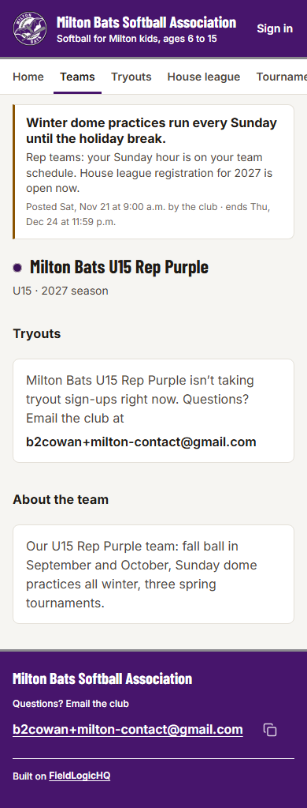
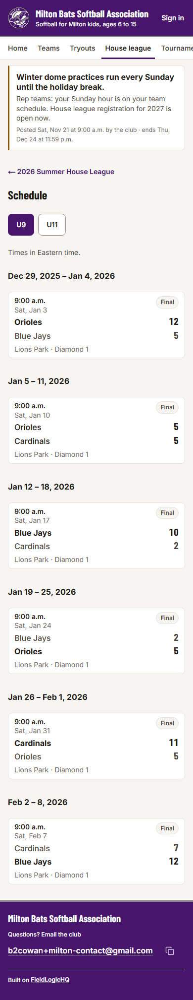
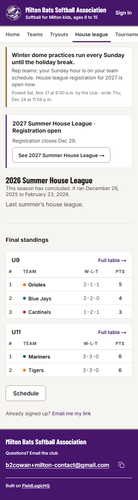
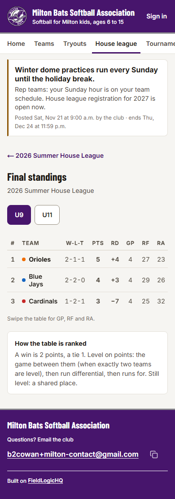
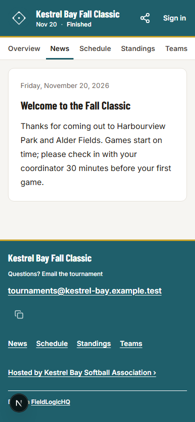
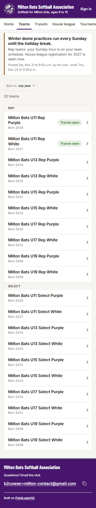

<title>Club Website — Stage 0 End State</title>
<meta name="claude:viewport-fit-sides" content="cover">
<link rel="preconnect" href="https://fonts.googleapis.com">
<link rel="stylesheet" href="https://fonts.googleapis.com/css2?family=Barlow+Condensed:wght@600;700&family=Inter:wght@400;500;600;700&display=swap">
<style>
/* Layout: sticky numbered tabs, one decision per tab; each tab = before capture | after frame (true size) | why. */
:root{
  --doc-bg:#E9ECEF; --doc-panel:#FFFFFF; --doc-fg:#1B2027; --doc-soft:#4A5562; --doc-line:#CDD3DA; --doc-accent:#2D5B8A;
  --new:#1F7A3A; --new-bg:#DDF2E3; --res:#7A4E00; --res-bg:#F7E9CC; --same:#5A6470; --same-bg:#E4E8EC; --askc:#5B2D8A; --ask-bg:#ECE2F7;
  --f-display:"Barlow Condensed","Arial Narrow",Arial,sans-serif; --f-text:Inter,"Segoe UI",system-ui,sans-serif;
}
@media (prefers-color-scheme: dark){:root:not([data-theme="light"]){--doc-bg:#14181D;--doc-panel:#1D232A;--doc-fg:#E6EAEE;--doc-soft:#A8B2BD;--doc-line:#343D47;--doc-accent:#8DB7E2;--new:#7FD69A;--new-bg:#1B3A25;--res:#F0C36B;--res-bg:#3B2E12;--same:#B4BDC7;--same-bg:#2A3139;--askc:#CBA8F0;--ask-bg:#33244A;color-scheme:dark}}
:root[data-theme="dark"]{--doc-bg:#14181D;--doc-panel:#1D232A;--doc-fg:#E6EAEE;--doc-soft:#A8B2BD;--doc-line:#343D47;--doc-accent:#8DB7E2;--new:#7FD69A;--new-bg:#1B3A25;--res:#F0C36B;--res-bg:#3B2E12;--same:#B4BDC7;--same-bg:#2A3139;--askc:#CBA8F0;--ask-bg:#33244A;color-scheme:dark}
*{box-sizing:border-box}
body{background:var(--doc-bg);color:var(--doc-fg);font:14px/1.5 var(--f-text);margin:0}
body::before{content:"";position:fixed;inset:0 0 auto;height:env(safe-area-inset-top,0px);z-index:10;background:var(--doc-panel)}
.wrap{padding-left:max(16px,env(safe-area-inset-left,0px));padding-right:max(16px,env(safe-area-inset-right,0px))}
header.top{background:var(--doc-panel);border-bottom:1px solid var(--doc-line)}
header.top .wrap{padding-block:16px 10px}
header.top h1{font:700 26px/1.1 var(--f-display);letter-spacing:.01em;margin:0;text-wrap:balance}
header.top p{margin:4px 0 0;color:var(--doc-soft);max-width:900px}
nav.tabs{position:sticky;top:env(safe-area-inset-top,0px);z-index:5;background:var(--doc-panel);border-bottom:1px solid var(--doc-line)}
nav.tabs .wrap{display:flex;gap:2px;overflow-x:auto;scrollbar-width:thin}
nav.tabs button{flex:0 0 auto;border:0;background:none;color:var(--doc-soft);font:600 13px var(--f-text);padding:12px 10px;border-bottom:3px solid transparent;cursor:pointer;white-space:nowrap}
nav.tabs button[aria-selected="true"]{color:var(--doc-fg);border-bottom-color:var(--doc-accent)}
button:focus-visible{outline:2px solid var(--doc-accent);outline-offset:2px}
.viewrow{display:flex;align-items:center;gap:10px;padding-block:10px;flex-wrap:wrap}
.viewrow .lbl{font-weight:600;color:var(--doc-soft)}
.track{display:inline-flex;background:#fff;border:1px solid var(--doc-line);border-radius:9px;padding:3px}
.track button{border:0;background:none;padding:6px 12px;border-radius:6px;font:600 13px var(--f-text);color:#4A5562;cursor:pointer}
.track button[aria-pressed="true"]{background:#E3EAD2;color:#2F3A12}
main .wrap{padding-block:8px 60px}
section.tab{display:none}
section.tab.on{display:block}
h2.t{font:700 22px/1.15 var(--f-display);margin:12px 0 4px}
h3.t{font:700 17px/1.2 var(--f-text);margin:22px 0 6px}
p.lead{max-width:880px;margin:4px 0 12px;color:var(--doc-soft)}
.note{max-width:880px}
.note li{margin:4px 0}
.callout{background:var(--doc-panel);border:1px solid var(--doc-line);border-left:4px solid var(--doc-accent);border-radius:0 8px 8px 0;padding:10px 14px;max-width:900px;margin:10px 0}
.callout.warn{border-left-color:var(--res)}
.sub{display:flex;gap:6px;flex-wrap:wrap;margin:10px 0 14px}
.sub button{border:1px solid var(--doc-line);background:var(--doc-panel);color:var(--doc-fg);border-radius:20px;padding:6px 14px;font:600 13px var(--f-text);cursor:pointer}
.sub button[aria-pressed="true"]{background:var(--doc-fg);color:var(--doc-panel)}
.state{display:none}.state.on{display:block}
.pair{display:flex;gap:28px;flex-wrap:wrap;align-items:flex-start}
.spec{display:flex;flex-direction:column;gap:6px;min-width:0}
.cap{font:700 11px/1.3 var(--f-text);letter-spacing:.07em;text-transform:uppercase;color:var(--doc-soft);max-width:392px}
.cap b{color:var(--doc-fg)}
.why{flex:1 1 280px;min-width:260px;max-width:430px}
.why h4{margin:0 0 6px;font:700 15px var(--f-text)}
.why ul{padding-left:18px;margin:6px 0}
.why li{margin:5px 0}
.shot{width:392px;max-width:100%;max-height:1300px;overflow:auto;border:1px solid var(--doc-line);border-radius:14px;background:#fff}
.shot img{display:block;width:390px;max-width:none}
.shot.wide{width:100%;max-width:1282px}
.shot.wide img{width:1280px}
.scrollx{overflow-x:auto;max-width:100%;border:1px solid var(--doc-line);border-radius:10px}
.mk{display:inline-flex;align-items:center;border:0;border-radius:4px;font:700 10px/1 var(--f-text);letter-spacing:.05em;text-transform:uppercase;padding:4px 6px;cursor:pointer;vertical-align:middle;white-space:nowrap}
.mk.new{background:var(--new-bg);color:var(--new)}
.mk.res{background:var(--res-bg);color:var(--res)}
.mk.same{background:var(--same-bg);color:var(--same)}
.askm{display:inline-flex;border:0;border-radius:4px;background:var(--ask-bg);color:var(--askc);font:700 10px/1 var(--f-text);padding:4px 6px;cursor:pointer;vertical-align:middle;letter-spacing:.03em}
.fr .mk,.fr .askm,.win .mk,.tv .mk{position:absolute;z-index:3}
.fr .mk.new,.win .mk.new,.tv .mk.new{background:#DDF2E3;color:#1F7A3A}.fr .mk.res{background:#F7E9CC;color:#7A4E00}.fr .mk.same{background:#E4E8EC;color:#5A6470}.fr .askm{background:#ECE2F7;color:#5B2D8A}
.tr{top:-12px;right:0}.tr2{top:-12px;right:84px}
.diffmode .fr .dim > *:not(.mk):not(.askm){opacity:.16}
.diffmode .fr .dim.solo{opacity:.16}
/* ===== club site specimen (a picture of a light page: fixed light colours on purpose) ===== */
.fr{--ground:#F6F5F2;--card:#fff;--text:#1F1B16;--soft:#4E473D;--dim:#6F675B;--line:#E4E0D8;--line2:#D6D0C4;--ok:#2C6A2A;--okbg:#E6F0E2;--warn:#8A5300;--bad:#A3261C;
  --fill:#1E5F6A;--onfill:#fff;--ink:#1E5F6A;--edge:#1E5F6A;--accent:#D9A521;
  background:var(--ground);color:var(--text);font:16px/1.4 var(--f-text);border:1px solid #9AA4AE;border-radius:14px;overflow:hidden;width:392px;max-width:100%;position:relative;flex:0 0 auto}
.fr.milton{--fill:#4A176C;--ink:#4A176C;--edge:#4A176C;--accent:#9C9C9C}
.fr.pc{width:1282px;max-width:none;border-radius:8px}
.fr *{box-sizing:border-box}
.fr .fold{position:absolute;left:0;right:0;top:843px;border-top:2px dashed #C2410C;z-index:4;pointer-events:none}
.fr .fold span{position:absolute;right:6px;top:-20px;background:#C2410C;color:#fff;font:700 10px var(--f-text);padding:2px 6px;border-radius:3px}
.fr .bar{background:var(--fill);color:var(--onfill);min-height:72px;display:flex;align-items:center;gap:12px;padding:0 16px;border-bottom:3px solid var(--accent);position:relative}
.fr .logo{width:44px;height:44px;border-radius:10px;border:2px solid rgba(255,255,255,.55);display:grid;place-items:center;font:700 14px var(--f-display);flex:0 0 auto}
.fr .cn{font:700 20px/1.05 var(--f-display);letter-spacing:.01em}
.fr .tg{font:600 12px/1.3 var(--f-text);white-space:nowrap;overflow:hidden;text-overflow:ellipsis;max-width:220px}
.fr .si{margin-left:auto;font:600 14px var(--f-text)}
.fr .tabrow{background:#fff;display:flex;gap:4px;padding:0 8px;border-bottom:1px solid var(--line);overflow:hidden;white-space:nowrap;position:relative}
.fr .tabrow span{font:600 14px var(--f-text);padding:14px 8px 11px;color:var(--soft);border-bottom:3px solid transparent}
.fr .tabrow span.on{color:var(--text);border-bottom-color:var(--fill)}
.fr .pg{padding:16px;display:flex;flex-direction:column;gap:24px}
.fr .sec{display:flex;flex-direction:column;gap:10px;position:relative}
.fr h5{font:700 16px/1.2 var(--f-text);margin:0;display:flex;align-items:baseline;gap:8px}
.fr h5 .lk{margin-left:auto;font:600 14px var(--f-text);color:var(--ink)}
.fr h5 .dt{font:400 14px var(--f-text);color:var(--soft)}
.fr .h1{font:700 24px/1.1 var(--f-display);margin:0}
.fr .meta{font-size:14px;color:var(--soft)}
.fr .list{background:var(--card);border:1px solid var(--line);border-radius:8px;overflow:hidden;position:relative}
.fr .row{min-height:60px;padding:12px 40px 12px 16px;border-top:1px solid var(--line);position:relative;display:flex;flex-direction:column;justify-content:center;gap:2px}
.fr .list > :first-child{border-top:0}
.fr .row.chev::after{content:"";position:absolute;right:16px;top:50%;width:9px;height:9px;border-right:2px solid var(--dim);border-top:2px solid var(--dim);transform:translateY(-50%) rotate(45deg)}
.fr .rt{font:600 16px/1.25 var(--f-text)}
.fr .rs{font-size:12px;color:var(--dim)}
.fr .door{border-left:3px solid var(--edge);border-radius:0 8px 8px 0}
.fr .lb{padding:8px 16px;border-top:1px solid var(--line);background:var(--ground);font:700 12px/1.2 var(--f-text);text-transform:uppercase;letter-spacing:.06em;color:var(--soft)}
.fr .chip{display:inline-block;font:600 12px/1 var(--f-text);border-radius:20px;padding:5px 9px;white-space:nowrap;vertical-align:middle}
.fr .chip.ok{background:var(--okbg);color:var(--ok)}
.fr .chip.n{background:var(--ground);color:var(--soft);border:1px solid var(--line)}
.fr .pill{padding:4px 8px;border:1px solid var(--line);border-radius:20px;background:var(--ground);color:var(--soft);white-space:nowrap;font:600 12px/1.2 var(--f-text);align-self:start}
.fr .pill.live{color:var(--ok);background:var(--okbg);border-color:var(--okbg)}
.fr .pill.warn{color:var(--warn)}
.fr .gw{border-top:1px solid var(--line);background:var(--card)}
.fr .gw.live{box-shadow:inset 3px 0 0 var(--ok)}
.fr .g{padding:12px 16px}
.fr .gh{display:grid;grid-template-columns:minmax(0,1fr) auto;gap:8px}
.fr .tm{font:600 14px/1.25 var(--f-text);font-variant-numeric:tabular-nums}
.fr .cx{font:400 14px/1.25 var(--f-text);color:var(--dim)}
.fr .tms{display:flex;flex-direction:column;gap:4px;margin-top:6px}
.fr .sd{display:grid;grid-template-columns:minmax(0,1fr) auto;gap:8px;align-items:baseline;font:500 16px/1.3 var(--f-text)}
.fr .sd b{font:700 20px/1 var(--f-display);font-variant-numeric:tabular-nums}
.fr .sd.w span{font-weight:700}
.fr .sd.l,.fr .sd.l b{color:var(--soft)}
.fr .sd.own span{font-weight:700}
.fr .gpl{margin-top:6px;font-size:14px;color:var(--dim)}
.fr .why2{margin-top:4px;font:600 14px var(--f-text);color:var(--warn)}
.fr .ps{display:flex;justify-content:space-between;align-items:center;gap:12px;min-height:56px;padding:6px 6px 6px 16px;border-top:1px solid var(--line);color:var(--dim);font-size:14px}
.fr .ico{width:44px;height:44px;display:grid;place-items:center;color:var(--ink);font-size:18px;flex:0 0 auto}
.fr .btn{height:44px;border-radius:8px;font:600 16px var(--f-text);display:inline-flex;align-items:center;justify-content:center;padding:0 16px;border:1px solid var(--line2);background:#fff;color:var(--text)}
.fr .btn.p{background:var(--fill);color:var(--onfill);border-color:var(--fill)}
.fr .btn.o{border-color:var(--ink);color:var(--ink)}
.fr .ul{color:var(--text);text-decoration:underline;font:600 14px var(--f-text)}
.fr .card{background:var(--card);border:1px solid var(--line);border-radius:8px;padding:14px 16px}
.fr .notice{background:#fff;border:1px solid var(--line);border-left:3px solid var(--warn);border-radius:0 8px 8px 0;padding:12px 14px;margin:12px 16px 4px;position:relative;display:flex;flex-direction:column;gap:4px}
.fr .notice b{font:700 16px/1.25 var(--f-text)}
.fr .notice .d{font-size:14px;color:var(--soft)}
.fr .notice .s{font-size:12px;color:var(--dim)}
.fr .tiles{display:grid;grid-template-columns:1fr 1fr;gap:8px}
.fr .tile{min-height:52px;padding:16px 12px;border:1px solid var(--line);border-radius:8px;background:#fff;font:600 16px/1.25 var(--f-text)}
.fr .sp{display:grid;grid-template-columns:1fr 1fr;gap:8px}
.fr .spt{height:64px;border:1px solid var(--line);border-radius:8px;background:#fff;display:grid;place-items:center;text-align:center;font:700 14px/1.25 var(--f-text);color:var(--soft);padding:4px 8px}
.fr .sby{font-size:12px;color:var(--dim);display:flex;align-items:center;gap:8px;position:relative}
.fr .sby .lg{border:1px solid var(--line);border-radius:8px;padding:4px 8px;font:600 12px var(--f-text);color:var(--soft);background:#fff}
.fr .foot{background:var(--fill);color:var(--onfill);border-top:3px solid var(--accent);padding:20px 16px;display:flex;flex-direction:column;gap:8px}
.fr .foot small{font-size:12px}
.fr .ph{background:repeating-linear-gradient(135deg,#E7E2D8 0 10px,#EFEBE3 10px 20px);border:1px dashed var(--line2);border-radius:8px;display:grid;place-items:center;text-align:center;color:var(--soft);font:600 14px/1.35 var(--f-text);padding:16px}
.fr .photo{border-radius:8px;overflow:hidden;position:relative;background:linear-gradient(160deg,#6E8B5A,#A9B98A 55%,#D8C9A0);aspect-ratio:3/2}
.fr .pin{position:absolute;inset:0;display:grid;place-items:center;font:600 12px var(--f-text);color:#fff;text-shadow:0 1px 2px rgba(0,0,0,.5)}
.fr .post{display:grid;grid-template-columns:1fr 84px;gap:2px 12px;padding:12px 16px;border-top:1px solid var(--line)}
.fr .post .th{grid-row:1/4;grid-column:2;border-radius:8px;background:linear-gradient(160deg,#5D7F8C,#9FB9B4);aspect-ratio:1}
.fr .post .dt{font-size:12px;color:var(--dim)}
.fr .post .hd{font:600 16px/1.3 var(--f-text)}
.fr .post .bd{font-size:14px;color:var(--soft)}
.fr .post.nopic{grid-template-columns:1fr}
.fr .tsch{display:grid;grid-template-columns:96px 1fr auto;gap:2px 10px;padding:12px 6px 12px 16px;border-top:1px solid var(--line);align-items:center}
.fr .tsch .d1{font:600 14px var(--f-text)}.fr .tsch .d2{font-size:12px;color:var(--dim)}
.fr .tsch .ti{font:600 16px var(--f-text)}.fr .tsch .pl2{font-size:14px;color:var(--dim)}
.fr .tsch .r{font:700 14px var(--f-text);font-variant-numeric:tabular-nums;padding-right:10px}
.fr .tsch .r.win{color:var(--ok)}
.fr .tsch.next{box-shadow:inset 3px 0 0 var(--edge)}
.fr .st{width:100%;border-collapse:collapse;font-size:14px;background:#fff}
.fr .st th{font:700 12px var(--f-text);text-transform:uppercase;letter-spacing:.05em;color:var(--soft);text-align:left;padding:10px 8px;border-bottom:1px solid var(--line)}
.fr .st td{padding:15px 8px;border-top:1px solid var(--line);font-variant-numeric:tabular-nums}
.fr .seg{display:flex;gap:8px;flex-wrap:wrap}
.fr .seg span{height:44px;min-width:56px;padding:0 14px;border:1px solid var(--line2);border-radius:8px;background:#fff;display:grid;place-items:center;font:600 14px var(--f-text)}
.fr .seg span.on{background:var(--fill);color:var(--onfill);border-color:var(--fill)}
.fr .two{display:grid;grid-template-columns:540px 392px;gap:28px;align-items:start}
.fr .g1{display:grid;grid-template-columns:104px minmax(0,1fr) 104px;gap:12px;padding:12px 16px;align-items:center}
.fr .g1 .mid{display:grid;grid-template-columns:1fr auto 14px auto 1fr;gap:8px;align-items:baseline;font:500 16px var(--f-text)}
.fr .g1 .mid b{font:700 20px var(--f-display)}
.fr .g1 .rgt{display:flex;flex-direction:column;align-items:flex-end;gap:2px}
/* admin windows (light specimens) */
.win{background:#fff;color:#1F1B16;border:1px solid #C9CFBE;border-radius:8px;width:520px;max-width:100%;font:14px/1.45 var(--f-text);position:relative;flex:0 0 auto}
.win.w8{width:800px}
.win.w39{width:390px}
.win .wh{display:flex;align-items:center;padding:18px 24px 6px;font:700 18px var(--f-text)}
.win .wh .x{margin-left:auto;font:400 22px var(--f-text);color:#6F675B}
.win .wb{padding:6px 24px 18px;display:flex;flex-direction:column;gap:12px}
.win .wl{font:600 14px var(--f-text);color:#4E473D;margin-bottom:4px}
.win .in{border:1px solid #CFC8BA;border-radius:8px;min-height:44px;padding:0 12px;display:flex;align-items:center;color:#1F1B16;background:#fff}
.win .in.ta{min-height:76px;align-items:flex-start;padding-top:10px}
.win .in.dd::after{content:"▾";margin-left:auto;padding-left:8px;color:#6F675B}
.win .opt{display:flex;gap:10px;align-items:flex-start;padding:4px 0}
.win .rb{width:18px;height:18px;border-radius:50%;border:2px solid #8C8475;flex:0 0 auto;margin-top:2px}
.win .rb.on{border:6px solid #3F5512}
.win .cb{width:18px;height:18px;border-radius:4px;border:2px solid #8C8475;flex:0 0 auto;margin-top:2px}
.win .cb.on{background:#3F5512;border-color:#3F5512;box-shadow:inset 0 0 0 3px #fff}
.win .grp{border:1px solid #E4E0D8;border-radius:8px}
.win .gr{padding:10px 12px;border-top:1px solid #E4E0D8;display:flex;gap:10px;align-items:flex-start}
.win .gr:first-child{border-top:0}
.win .gr .n{margin-left:auto;color:#6F675B;white-space:nowrap}
.win .gh{background:#F6F5F2;font:700 12px var(--f-text);letter-spacing:.05em;text-transform:uppercase;color:#4E473D}
.win .sm{font-size:12px;color:#6F675B}
.win .wf{display:flex;align-items:center;gap:10px;border-top:1px solid #E4E0D8;padding:14px 24px;flex-wrap:wrap}
.win .wf .s{font-size:12px;color:#4E473D;flex:1 1 140px}
.win .b{height:44px;border-radius:8px;border:1px solid #CFC8BA;background:#fff;padding:0 14px;font:600 14px var(--f-text);display:inline-flex;align-items:center}
.win .b.lime{background:#C7E36B;border-color:#A9C64A;color:#1F2A05}
.win table{width:100%;border-collapse:collapse;font-size:14px}
.win th{text-align:left;font:700 12px var(--f-text);text-transform:uppercase;letter-spacing:.05em;color:#4E473D;padding:8px;border-bottom:1px solid #E4E0D8}
.win td{padding:10px 8px;border-top:1px solid #E4E0D8;font-variant-numeric:tabular-nums}
.win .pl{display:inline-block;font:600 12px var(--f-text);border-radius:20px;padding:3px 8px}
.win .pl.ok{background:#E6F0E2;color:#2C6A2A}.win .pl.w{background:#F6EBD7;color:#8A5300}.win .pl.b{background:#F8E3E0;color:#A3261C}
.toast{background:#1F1B16;color:#fff;border-radius:8px;padding:12px 14px;font:14px/1.45 var(--f-text);width:390px;max-width:100%}
/* big board: the club's fill as ground, white cards, everything at TV scale (x2) */
.tv{width:1280px;height:720px;background:#1E5F6A;color:#fff;border-radius:10px;overflow:hidden;display:grid;grid-template-rows:96px 1fr 120px;font-family:var(--f-text);position:relative}
.tv .tb{display:flex;align-items:center;gap:20px;padding:0 40px;border-bottom:6px solid #D9A521}
.tv .tb .cn{font:700 40px var(--f-display)}
.tv .tb .clk{margin-left:auto;font:700 44px var(--f-display);font-variant-numeric:tabular-nums}
.tv .body{display:grid;grid-template-columns:1.35fr 1fr;gap:28px;padding:26px 40px}
.tv h6{font:700 20px var(--f-text);letter-spacing:.08em;text-transform:uppercase;margin:0 0 12px}
.tv .lg{background:#fff;color:#1F1B16;border-radius:16px;padding:14px 20px;margin-bottom:12px;box-shadow:inset 6px 0 0 #2C6A2A}
.tv .lg .m{font:500 18px var(--f-text);color:#6F675B}
.tv .lg .t{display:flex;justify-content:space-between;font:600 30px/1.25 var(--f-text)}
.tv .lg .t b{font:700 36px var(--f-display);font-variant-numeric:tabular-nums}
.tv .nxl{background:#fff;color:#1F1B16;border-radius:16px;padding:4px 20px}
.tv .nx{display:grid;grid-template-columns:130px 1fr;gap:2px 16px;font:500 24px/1.3 var(--f-text);padding:12px 0;border-top:2px solid #E4E0D8}
.tv .nx:first-child{border-top:0}
.tv .nx .w{font-weight:700}
.tv .nx .p{grid-column:2;font-size:18px;color:#6F675B}
.tv .ft{display:flex;align-items:center;gap:24px;padding:0 40px;border-top:2px solid rgba(255,255,255,.35)}
.tv .fs{background:#fff;color:#8A5300;border-radius:16px;padding:12px 18px;font:700 22px var(--f-text);box-shadow:inset 6px 0 0 #8A5300}
.tv .spn{margin-left:auto;display:flex;align-items:center;gap:14px;font:600 20px var(--f-text)}
.tv .spn .t{width:220px;height:84px;background:#fff;color:#4E473D;border-radius:16px;display:grid;place-items:center;font:700 20px/1.2 var(--f-text);text-align:center}
table.doc{border-collapse:collapse;width:100%;max-width:1100px;background:var(--doc-panel);border:1px solid var(--doc-line);font-size:13px}
table.doc th{text-align:left;padding:9px 10px;background:var(--same-bg);color:var(--doc-fg);font:700 12px var(--f-text);text-transform:uppercase;letter-spacing:.04em}
table.doc td{padding:9px 10px;border-top:1px solid var(--doc-line);vertical-align:top}
.ask{background:var(--doc-panel);border:1px solid var(--doc-line);border-radius:10px;padding:14px 16px;margin:12px 0;max-width:980px}
.ask.hl{outline:3px solid var(--askc)}
.ask h4{margin:0 0 4px;font:700 16px var(--f-text)}
.ask .grp-h{font:700 12px var(--f-text);text-transform:uppercase;letter-spacing:.06em;color:var(--doc-soft)}
.ask .q{color:var(--doc-soft);margin:0 0 8px}
.ask label{display:flex;gap:8px;align-items:flex-start;padding:5px 0;cursor:pointer}
.ask label input{margin-top:3px}
.ask .rec{font-weight:700;color:var(--new)}
.ask .notrec{color:var(--doc-soft)}
.ask textarea{width:100%;min-height:44px;margin-top:6px;border:1px solid var(--doc-line);border-radius:6px;background:var(--doc-bg);color:var(--doc-fg);font:13px var(--f-text);padding:6px 8px}
.ask .rides{font-size:13px;color:var(--doc-soft);margin-top:6px}
h3.ag{font:700 13px var(--f-text);letter-spacing:.07em;text-transform:uppercase;color:var(--doc-soft);margin:24px 0 4px}
#paste{width:100%;min-height:200px;font:12px/1.45 ui-monospace,Consolas,monospace;border:1px solid var(--doc-line);border-radius:8px;background:var(--doc-panel);color:var(--doc-fg);padding:10px}
.copy{border:1px solid var(--doc-line);background:var(--doc-panel);color:var(--doc-fg);border-radius:8px;padding:8px 14px;font:600 13px var(--f-text);cursor:pointer}
.mil{background:var(--res-bg);color:var(--res);border-radius:8px;padding:10px 14px;font-weight:600;max-width:980px}
dialog{border:1px solid var(--doc-line);border-radius:12px;background:var(--doc-panel);color:var(--doc-fg);max-width:520px;width:calc(100% - 32px);padding:18px 20px}
dialog::backdrop{background:rgba(0,0,0,.45)}
dialog h4{margin:0 0 8px;font:700 16px var(--f-text)}
dialog .k{font:700 11px var(--f-text);letter-spacing:.06em;text-transform:uppercase;color:var(--doc-soft);margin-top:10px}
dialog button.close{float:right;border:0;background:none;color:var(--doc-soft);font-size:22px;cursor:pointer;line-height:1}
dialog .go{margin-top:12px}
/* idea 11: the club's feed */
.thumbs{display:grid;grid-template-columns:repeat(5,1fr);gap:6px}
.th2{aspect-ratio:1;border-radius:6px;background:linear-gradient(160deg,#6E8B5A,#A9B98A 55%,#D8C9A0);position:relative}
.th2.v2{background:linear-gradient(160deg,#5D7F8C,#9FB9B4)}
.th2.v3{background:linear-gradient(160deg,#7A5C8C,#B9A4C4)}
.win .askm{position:absolute;z-index:3}
.win.w39 .wf .s{flex:1 1 100%}
.win.w39 .wf .s + .b{margin-left:auto}
.win td.nw{white-space:nowrap}
.th2.add{background:#fff;border:1px dashed #CFC8BA;display:grid;place-items:center;color:#6F675B;font:600 24px/1 var(--f-text)}
.th2.on{outline:2px solid #3F5512;outline-offset:1px}
.th2.on::after{content:"✓";position:absolute;right:4px;top:4px;width:20px;height:20px;border-radius:4px;background:#3F5512;color:#fff;display:grid;place-items:center;font:700 12px/1 var(--f-text)}
.th2.off::after{content:"";position:absolute;right:4px;top:4px;width:20px;height:20px;border-radius:4px;border:2px solid #fff;background:rgba(255,255,255,.4)}
.win .lnk{min-height:44px;display:flex;align-items:center;font:600 14px/1.3 var(--f-text)}
.win.w39 .track button{min-height:44px;padding:0 16px}
.fr .l44{font-size:14px;line-height:1.4;color:var(--soft)}
.fr .l44 .ul{display:inline-flex;align-items:center;min-height:44px}
.win .pl.n{background:#F6F5F2;color:#4E473D}
.win .pl{white-space:nowrap}
.fr .dots{display:flex;gap:6px;justify-content:center}
.fr .dots i{width:6px;height:6px;border-radius:50%;background:var(--line2)}
.fr .dots i.on{background:var(--text)}
.fr .igh{border:1px solid var(--line);border-radius:8px;background:#fff;padding:16px;display:flex;flex-direction:column;gap:10px;align-items:flex-start}
.fr .rad{display:flex;align-items:center;gap:10px;min-height:44px;font:500 16px/1.3 var(--f-text)}
.fr .rad i{width:20px;height:20px;border-radius:50%;border:2px solid #8C8475;flex:0 0 auto}
.fr .ig{border:1px dashed #9AA4AE;border-radius:4px;background:#fff;color:#262626;font:14px/1.3 var(--f-text);overflow:hidden}
.fr .igt{display:flex;align-items:center;gap:10px;padding:10px 12px}
.fr .igt i{width:32px;height:32px;border-radius:50%;background:#C9CFD6;flex:0 0 auto}
.fr .igt span{margin-left:auto;background:#0095F6;color:#fff;border-radius:6px;padding:6px 10px;font:600 12px/1 var(--f-text)}
.fr .igp{aspect-ratio:1;background:linear-gradient(160deg,#8A7A5A,#C9B98A 55%,#E4D8B8);position:relative}
.fr .igb{padding:10px 12px;display:flex;flex-direction:column;gap:8px}
.fr .igb .vm{color:#0095F6;font-weight:600;border-bottom:1px solid #EFEFEF;padding-bottom:8px}
.fr .igb .ic{display:flex;gap:12px}
.fr .igb .ic i{width:22px;height:22px;border:2px solid #262626;border-radius:50%}
.fr .igb .lk{font-weight:600}
.fr .igb .cm{color:#8E8E8E;border-top:1px solid #EFEFEF;padding-top:8px}
.legend{display:flex;gap:8px;flex-wrap:wrap;align-items:center;font-size:12px;color:var(--doc-soft)}
@media (prefers-reduced-motion:reduce){*{transition:none!important;animation:none!important}}
</style>

<header class="top"><div class="wrap">
  <h1>Club Website Enhancements · Stage 0 · the end state</h1>
  <p>Every public club page drawn once, as it stands when all ten ideas are in. <b>Tab 11 is new:</b> an eleventh idea from the Milton Bats meeting, the club's own feed, with ten asks of its own. Before = today's capture at true size; after = the frame, also true size. Nothing here is built. Click any tag on a frame to read what it is; purple tags jump to the ask they belong to. Reviewed by /ux, /design, /legal and /marketing before you saw it. Written 2026-11-24.</p>
</div></header>
<nav class="tabs" aria-label="Sections"><div class="wrap" role="tablist">
  <button role="tab" data-tab="walk">1 · The walk</button>
  <button role="tab" data-tab="home">2 · Home</button>
  <button role="tab" data-tab="team">3 · Team page</button>
  <button role="tab" data-tab="league">4 · House league</button>
  <button role="tab" data-tab="news">5 · News</button>
  <button role="tab" data-tab="sponsors">6 · Sponsors</button>
  <button role="tab" data-tab="trophy">7 · Trophy case</button>
  <button role="tab" data-tab="board">8 · Big Board</button>
  <button role="tab" data-tab="kit">9 · Share kit</button>
  <button role="tab" data-tab="doors">10 · Admin doors</button>
  <button role="tab" data-tab="feed">11 · The club's feed</button>
  <button role="tab" data-tab="trackp">12 · Track P</button>
  <button role="tab" data-tab="teams">13 · Teams &amp; tryouts</button>
  <button role="tab" data-tab="found">14 · Foundations</button>
  <button role="tab" data-tab="ladder">15 · Ladder</button>
  <button role="tab" data-tab="asks">16 · Asks</button>
</div></nav>

<main><div class="wrap">
<div class="viewrow" id="viewrow">
  <span class="lbl">View</span>
  <span class="track" role="group" aria-label="View"><button id="v-all" aria-pressed="true">Everything</button><button id="v-diff" aria-pressed="false">Show only what differs</button></span>
  <span class="legend"><span class="mk new">New</span><span class="mk res">Restyled</span><span class="mk same">Unchanged</span><span class="askm">A1</span> an ask · S1–S9 = the stage that builds it · <span style="border-top:2px dashed #C2410C;width:28px;display:inline-block"></span> end of a phone's first screen (844 px)</span>
</div>

<!-- ============ 1 WALK ============ -->
<section class="tab" id="walk">
<h2 class="t">What the walk found</h2>
<p class="lead">Part 1 ran on 2026-11-24 against Kestrel Bay on dev (a registration-open day, and a game day with a tournament live) and Milton Bats on staging (notice up, sponsors, 20 rep teams). One capture is new today: Milton's U15 Rep Purple team page, now that its address is fixed. Eight findings, in the order they change the work.</p>
<div class="note"><ol>
<li><b>On game day the home does not change.</b> With two tournament games live, the only difference on Kestrel's home is a green "Live now" chip on the fourth card down. Milton's home is 3,076 px tall on a phone, and its 20 team tiles are most of that.</li>
<li><b>There is no public "club's games" read, and the one that exists must not be reused.</b> The staff calendar reads every program's games with none of the publish rules. The public rules live per program. A rep team's games are public only when the team is set to "public link". A house league division's are public only once its schedule is published and its changes are sent. A tournament's are public only when its division is published. The home has to ask each program in its own words. Few rep teams are public, so rep games will be thin.</li>
<li><b>Field status is closer than the plan thought, and it collides with two things already built.</b> Permits always point at a real place. House league and rep games point at one, or carry a name someone typed. House league already has a <b>Rainout</b> (a day's games postponed or cancelled, filtered by place), and tournaments a <b>Rain delay</b>. The notice's own example text is "All fields are closed tonight". So today a closure is typed twice: once as a notice, once as a Rainout.</li>
<li><b>The faster-scores premise is gone.</b> The old instant-update path was deleted and a test keeps it out. Tournament pages check every 30 seconds; house league pages never refresh. Faster scores is now a choice, not a wait on the database team.</li>
<li><b>"Claim it" cannot work from today's prospect seed.</b> A prospect's club lives on dev (staging reads dev); a real sign-up happens on production. Claiming means copying a club into production, or making prospect clubs on production.</li>
<li><b>Photos have nothing under them:</b> no consent question anywhere and no team photo, and the banner is hidden on phones. <b>Sponsors</b> show in three places (the home strip, About, and "Sponsored by" on house league schedule and standings), and nothing is counted.</li>
<li><b>Checked:</b> calendar subscribe exists (public-link teams only). Share-preview images already exist for the home, a team and a tryout. There is no public house league team page.</li>
<li><b>A notice shows the moment it is posted</b> and takes itself down at its end time. It has no start time and no close button.</li>
</ol></div>
<div class="callout"><b>New today: Milton's U15 Rep Purple team page.</b> It now answers; before the fix it was "not found". Its schedule is set to <i>families only</i> and it has no games, so the public page shows no Schedule section at all. Tab 3 draws the schedule from the shipped schedule component and says so.</div>
<div class="callout warn"><b>States that could not be staged</b> are drawn, not captured. A true quiet day: Kestrel's 2026 registration stays open until Dec 25, so its capture is really the registration-open state. A rep team page with a public schedule: no team on dev is both public and has games. A field closed: nothing like it exists today.</div>
<div class="callout"><b>What the reviews changed before you saw this.</b> <code>/ux</code> argued that a home whose order flips by day is unpredictable. A fixed order with Open now limited to two rows still puts the first live game in a phone's first screen, so the recommendation for A1 changed to that. <code>/marketing</code> renamed "This week" to "News", because it held a nine-day-old post and a January meeting. <code>/design</code> brought the game rows, bands and pills back to the shipped ones. <code>/legal</code> tied photo consent to the people in the photo, kept player photos out of posters and share images, and shaped the email sign-up for anti-spam law.</div>
<h3 class="t">The before captures this page uses</h3>
<div class="pair">
  <div class="spec"><span class="cap">Kestrel Bay · home · registration open</span><div class="shot"></div></div>
  <div class="spec"><span class="cap">Kestrel Bay · home · Fall Classic live</span><div class="shot"></div></div>
  <div class="spec"><span class="cap">Milton Bats · home · notice up (scroll inside)</span><div class="shot"></div></div>
</div>
</section>

<!-- ============ 2 HOME ============ -->
<section class="tab" id="home">
<h2 class="t">The club home: one moving region, in a fixed order</h2>
<p class="lead">Three ideas want the top of this page: game day, field status and news, plus Board Ready's club events. They share one region with two parts, in a fixed place <button class="askm" data-ask="A2">A2</button>. The order is the same every day <button class="askm" data-ask="A1">A1</button>: the notice slot (a closed field rides here <button class="askm" data-ask="A4">A4</button>) → <b>Open now</b> (at most two rows, then "N more") → <b>the games part</b> ("Today" on a day with games, "Latest results" the day after) → <b>News</b> (posts and coming events) → Teams · House league · Tournaments · About · Sponsors. Each part is absent when it has nothing.</p>
<div class="sub" role="group" aria-label="Home state">
  <button data-state="h-quiet" aria-pressed="true">Quiet day</button>
  <button data-state="h-game" aria-pressed="false">Game day</button>
  <button data-state="h-field" aria-pressed="false">A field closed</button>
  <button data-state="h-news" aria-pressed="false">A news post up</button>
  <button data-state="h-reg" aria-pressed="false">Registration open</button>
  <button data-state="h-pc" aria-pressed="false">Computer · game day</button>
</div>

<!-- QUIET -->
<div class="state on" id="h-quiet"><div class="pair">
  <div class="spec"><span class="cap">Before · Kestrel <b>(the nearest to quiet: registration still open)</b></span><div class="shot"></div></div>
  <div class="spec"><span class="cap">After · <b>quiet day</b>: nothing open, no games this week</span>
  <div class="fr">
    <div class="fold"><span>first screen ends</span></div>
    <div class="bar dim"><div class="logo">KB</div><div><div class="cn">Kestrel Bay Softball Association</div><div class="tg">House league softball for Kestrel Bay</div></div><div class="si">Sign in</div></div>
    <div class="tabrow"><span class="on">Home</span><span>Teams</span><span>House league</span><span>Tournaments</span><span>News</span><button class="mk res" style="top:4px;right:4px" data-note="The News tab appears once the club has a post, and goes again if it has none. The tab row follows content, as the tournament pages already do (News and Rules are hidden there when empty). Stage 4.">Restyled · S4</button></div>
    <div class="pg">
      <div class="sec"><button class="mk new tr" data-note="The News part of the region. It holds the newest posts (the club's own, and the ones the site writes from fixed sentences) and coming club events, which come from Board Ready Stages 5 and 7 into this same list. On the home each row is two lines: the headline and its date. Photos and bodies are on the News page. It shows when there is a post from the last 30 days or an event still to come; otherwise it is absent. Stage 4.">New · S4</button>
        <h5>News<span class="lk">All news</span></h5>
        <div class="list">
          <div class="row chev"><div class="rt">The Fall Classic is in the books</div><div class="rs">Mon, Nov 23</div></div>
          <div class="row chev"><div class="rt">Annual general meeting</div><div class="rs">Coming up · Tue, Jan 13 at 7:00 p.m. · Kestrel Bay Library</div></div>
        </div>
      </div>
      <div class="sec dim"><button class="mk same tr" data-note="The Teams section as shipped. Its layout is not decided here: Team structure's Stage 0 draws it (tab 13).">Unchanged</button><h5>Teams</h5><div class="card"><div class="tile">Kestrel Bay U13 Ospreys</div></div></div>
      <div class="sec"><button class="mk new tr" data-note="Idea 10's 'Email me when it opens' (ask A10). A house league with no live season shows today's 'Past seasons and results' row. The end state adds a line with the date the admin typed for the next opening ('Registration opens Mar 1'), and one button. The window and its words are on tab 9. Stage 9.">New · S9</button><button class="askm tr2" data-ask="A10">A10</button>
        <h5>House league</h5>
        <div class="list"><div class="row"><div class="rt">2027 House League</div><div class="rs">Registration opens Mar 1</div><div style="margin-top:8px"><span class="btn o">Email me when it opens</span></div><div class="rs" style="margin-top:4px">One email when registration opens. Nothing else.</div></div><div class="row chev"><div class="rt">Past seasons and results</div></div></div>
      </div>
      <div class="sec"><button class="mk res tr" data-note="About us as shipped, plus one row: Trophy case (idea 8, Stage 8). On a computer About is the side column, so the trophy row sits there too.">Restyled · S8</button><button class="askm tr2" data-ask="A11">A11</button><h5>About us</h5><div class="list"><div class="row"><div style="font-size:16px;color:var(--soft)">Kestrel Bay Softball Association runs house league softball in five age groups, from U7 to U15.</div></div><div class="row chev"><div class="rt">Trophy case</div><div class="rs">14 championships since 2019</div></div></div></div>
      <div class="sec dim"><button class="mk same tr" data-note="The sponsor strip as ruled 2026-10-19/23: same-size tiles, last on the home, above the footer.">Unchanged</button><h5>Sponsors</h5><div class="sp"><div class="spt">Main Street Physio &amp; Sport</div><div class="spt">Harbour Credit Union</div><div class="spt">Alder Fields Pizza</div></div></div>
    </div>
    <div class="foot dim"><div class="cn">Kestrel Bay Softball Association</div><small>Questions? Email the club</small><u>info@kestrel-bay.example.test</u><small>Built on FieldLogicHQ</small></div>
  </div></div>
  <div class="why"><h4>What a quiet day shows</h4><ul>
    <li>No Open now and no games part: both are absent when empty, as today.</li>
    <li><b>News</b> leads instead, so the page still has something dated on it. <button class="askm" data-ask="A2">A2</button></li>
    <li>A season that has not opened yet offers "Email me when it opens". It is the only new place on the home where a visitor leaves an email. <button class="askm" data-ask="A10">A10</button></li>
    <li>The News tab appears only once the club has a post.</li>
  </ul></div>
</div></div>

<!-- GAME DAY -->
<div class="state" id="h-game"><div class="pair">
  <div class="spec"><span class="cap">Before · Kestrel on game day (Fall Classic live)</span><div class="shot"></div></div>
  <div class="spec"><span class="cap">After · <b>game day</b>: house league, one public rep team, the Winter Classic, and four things open</span>
  <div class="fr">
    <div class="fold"><span>first screen ends</span></div>
    <div class="bar dim"><div class="logo">KB</div><div><div class="cn">Kestrel Bay Softball Association</div><div class="tg">House league softball for Kestrel Bay</div></div><div class="si">Sign in</div></div>
    <div class="tabrow dim"><span class="on">Home</span><span>Teams</span><span>House league</span><span>Tournaments</span><span>News</span></div>
    <div class="pg">
      <div class="sec"><button class="mk res tr" data-note="Open now keeps its place and look (first, ruled 2026-10-19). New: it shows at most two rows, then one row saying how many more. That cap is what keeps the games part inside the first phone screen on the busiest day: drawn here with four things open, the first live game still starts above the dashed line. Stage 1.">Restyled · S1</button><button class="askm tr2" data-ask="A1">A1</button><h5>Open now</h5><div class="list door"><div class="row chev"><div class="rt">2026 House League</div><div class="rs">Sign up by Dec 25</div></div><div class="row chev"><div class="rt">2027 tryouts</div><div class="rs">2 teams · Sun, Jan 10 · Lakeshore Dome</div></div><div class="row chev"><div class="rt">2 more open now</div><div class="rs">Winter skills clinic · Spring Open registration</div></div></div></div>
      <div class="sec"><button class="mk new tr" data-note="The games part of the region (idea 2, Stage 1). Titled 'Today' on a day with public games, 'Latest results' on the day after. It is the tournament Overview's shipped recipe (Live now, Later today, Latest results) as bands inside one list. Rows are grouped by TIME, never by program, so a club with no public rep teams still reads well: house league and tournaments fill it. Each row's second line says where the game belongs.">New · S1</button>
        <h5>Today <span class="dt">Sat, Nov 28</span></h5>
        <div class="seg" style="position:relative"><span class="on">All</span><span>U9</span><span>U11</span><span>U13</span><span>Rep</span><button class="mk new" style="top:-6px;right:0" data-note="Shown only when Today has more than 8 games. It narrows this list and nothing else: not saved, not a follow, not a page. Drawn from the house league schedule's division buttons (44 px). Stage 1.">New · S1</button></div>
        <div class="list">
          <div class="lb">Live now</div>
          <div class="gw live"><div class="g"><div class="gh"><div><div class="tm">9:00 a.m.</div><div class="cx">House league · U11</div></div></div><div class="tms"><div class="sd"><span>Orioles</span><b>4</b></div><div class="sd"><span>Blue Jays</span><b>3</b></div></div></div><div class="ps"><span>Lions Park · Diamond 1</span><span class="ico" aria-label="Directions">➤</span></div></div>
          <div class="gw live"><div class="g"><div class="gh"><div><div class="tm">9:30 a.m.</div><div class="cx">U13 Ospreys · rep</div></div></div><div class="tms"><div class="sd"><span>Kestrel Bay U13 Ospreys</span><b>2</b></div><div class="sd"><span>Marlow Heights</span><b>1</b></div></div></div><div class="ps"><span>Harbourview Park · Diamond 2</span><span class="ico" aria-label="Directions">➤</span></div></div>
          <div class="row chev door" style="position:relative"><button class="mk new" style="top:6px;right:34px" data-note="A running tournament is ONE row on the club home, never its games: a 60-game Saturday would bury the house league. It sits in Live now, carries two counts, and opens the tournament's own Overview, which already has Live now, Up next and results (ask A3).">New · S1</button><div class="rt">Kestrel Bay Winter Classic</div><div class="rs">6 games on now · 22 games today · Harbourview Park, Alder Fields</div></div>
          <div class="lb">Later today</div>
          <div class="gw"><div class="g"><div class="gh"><div><div class="tm">11:00 a.m.</div><div class="cx">House league · U9</div></div></div><div class="tms"><div class="sd"><span>Cardinals</span></div><div class="sd"><span>Robins</span></div></div><div class="gpl">Lions Park · Diamond 1</div></div></div>
          <div class="row chev"><div class="rt">5 more games today</div></div>
          <div class="lb">Latest results</div>
          <div class="gw"><div class="g"><div class="gh"><div><div class="tm">Thu, Nov 26</div><div class="cx">House league · U13</div></div><span class="pill">Final</span></div><div class="tms"><div class="sd w"><span>Herons</span><b>9</b></div><div class="sd l"><span>Gulls</span><b>6</b></div></div></div></div>
        </div>
        <div class="sby"><button class="mk new" style="position:static" data-note="A new sponsor place (idea 5, Stage 5): one line at the foot of Today, in the look of the shipped 'Sponsored by' line under a house league division. Not a bigger tile. A sponsor chooses this place in its own record, as for every place today, and the club is told the sentence is a claim it makes. Counted for the season report. A bigger presenting tile is call C1.">New · S5</button> Today's games are sponsored by <span class="lg">Main Street Physio &amp; Sport</span></div>
      </div>
      <div class="sec dim"><h5>News<span class="lk">All news</span></h5><div class="list"><div class="row chev"><div class="rt">The Winter Classic starts today</div><div class="rs">Thu, Nov 26</div></div></div></div>
      <div class="sec dim"><h5>Teams</h5><div class="card"><div class="tile">Kestrel Bay U13 Ospreys</div></div></div>
    </div>
  </div></div>
  <div class="why"><h4>Why it is shaped this way</h4><ul>
    <li>A family on a Saturday asks one thing: is my game on, and what is the score. With Open now capped at two rows, the first live game starts inside the first phone screen, even with four things open.</li>
    <li>The rows come from each program's own public rule. A rep team set to families only never appears here, whatever the staff calendar holds.</li>
    <li><b>Thin rep games still read well:</b> rows are by time, not by program. With no public rep teams the list is just house league and tournaments, as the field-closed state shows.</li>
    <li>Up to 4 rows per band; the rest open in place. No page for one game and no club-wide schedule page.</li>
    <li>"Latest results" holds the last two days. On a Sunday with no games, the part is titled "Latest results" and holds Saturday's finals.</li>
    <li>House league pages start refreshing as tournament pages do (every 30 seconds while a game is on).</li>
    <li>No follow, alert or share control in a browser.</li>
    <li><i>Considered and not recommended:</i> lifting Today above Open now on game days. It wins only when Open now is long, and it makes the page move under a returning visitor (A1 · B).</li>
  </ul></div>
</div></div>

<!-- FIELD CLOSED -->
<div class="state" id="h-field"><div class="pair">
  <div class="spec"><span class="cap">Before · Milton with its notice up (the closest thing today)</span><div class="shot"></div></div>
  <div class="spec"><span class="cap">After · <b>a field closed</b>: Lions Park, wet fields, no public rep teams</span>
  <div class="fr">
    <div class="fold"><span>first screen ends</span></div>
    <div class="bar dim"><div class="logo">KB</div><div><div class="cn">Kestrel Bay Softball Association</div><div class="tg">House league softball for Kestrel Bay</div></div><div class="si">Sign in</div></div>
    <div class="tabrow dim"><span class="on">Home</span><span>Teams</span><span>House league</span><span>Tournaments</span><span>News</span></div>
    <div class="notice"><button class="mk new" style="top:-10px;right:0" data-note="Field status (idea 3, Stage 2). It uses the notice's slot and look, because that is where clubs already put 'All fields are closed tonight'. The site writes the first line from fixed words; the detail is the club's own line, then a fixed sentence. The small line is the shipped notice line. It ends by itself and shows on every club page that wears the club frame. One act behind it marks every affected game: see Close a place on tab 10.">New · S2</button><button class="askm" style="top:-10px;right:84px" data-ask="A4">A4</button>
      <b>Lions Park is closed today</b><div class="d">Wet fields. No games at Lions Park today.</div><div class="s">Posted 7:10 a.m. by the club · ends tonight</div></div>
    <div class="pg">
      <div class="sec dim"><h5>Open now</h5><div class="list door"><div class="row chev"><div class="rt">2026 House League</div><div class="rs">Sign up by Dec 25</div></div></div></div>
      <div class="sec"><h5>Today <span class="dt">Sat, Nov 28</span></h5>
        <div class="list">
          <div class="lb">Postponed</div>
          <div class="gw" style="position:relative"><button class="mk new" style="top:8px;right:8px" data-note="A game the closure moved off. Under a 'Postponed' band the pill is left off (the shipped rule: say it once). The reason line is the only new wording. The same line shows on the home, the season schedule, the team page and the Big Board, all from the same game.">New · S2</button><div class="g"><div class="gh"><div><div class="tm">9:00 a.m.</div><div class="cx">House league · U11</div></div></div><div class="tms"><div class="sd"><span>Orioles</span></div><div class="sd"><span>Blue Jays</span></div></div><div class="why2">Lions Park closed · waits for a new date</div></div></div>
          <div class="gw"><div class="g"><div class="gh"><div><div class="tm">11:00 a.m.</div><div class="cx">House league · U9</div></div></div><div class="tms"><div class="sd"><span>Cardinals</span></div><div class="sd"><span>Robins</span></div></div><div class="why2">Lions Park closed · waits for a new date</div></div></div>
          <div class="row chev"><div class="rt">4 more games postponed</div></div>
          <div class="lb">Later today</div>
          <div class="gw"><div class="g"><div class="gh"><div><div class="tm">10:00 a.m.</div><div class="cx">House league · U13</div></div></div><div class="tms"><div class="sd"><span>Herons</span></div><div class="sd"><span>Gulls</span></div></div><div class="gpl">Harbour Park · Diamond 1</div></div></div>
        </div>
      </div>
      <div class="sec dim"><h5>Teams</h5><div class="card"><div class="tile">Kestrel Bay U13 Ospreys</div></div></div>
    </div>
  </div></div>
  <div class="why"><h4>One act, three programs</h4><ul>
    <li>The admin closes a <b>place</b> for a day (or until a day). That one act writes the strip at the top and marks every game there.</li>
    <li><b>House league:</b> it is today's Rainout, aimed at a place. Postpone or Cancel, the families' email, and the "Needs a new date" list all stay as built.</li>
    <li><b>Rep games are marked</b>, never moved, because the schedule is the team's. The coach is emailed and moves the game. <button class="askm" data-ask="A5">A5</button></li>
    <li><b>Tournament games</b> at that place are handed to the tournament's own Rain delay, which knows the game order.</li>
    <li><b>A game whose place was typed, not picked</b>, is marked only if the admin ticks it in the window. Until then it shows as scheduled. <button class="askm" data-ask="A6">A6</button></li>
    <li><b>No news post while the strip is up</b>, so the closure is not said three times on one screen. The site writes the record post when the strip ends.</li>
  </ul></div>
</div></div>

<!-- NEWS UP -->
<div class="state" id="h-news"><div class="pair">
  <div class="spec"><span class="cap">Before · Kestrel today: no news anywhere on the home</span><div class="shot"></div></div>
  <div class="spec"><span class="cap">After · <b>a news post up</b>: a weekday, registration open</span>
  <div class="fr">
    <div class="fold"><span>first screen ends</span></div>
    <div class="bar dim"><div class="logo">KB</div><div><div class="cn">Kestrel Bay Softball Association</div><div class="tg">House league softball for Kestrel Bay</div></div><div class="si">Sign in</div></div>
    <div class="tabrow dim"><span class="on">Home</span><span>Teams</span><span>House league</span><span>Tournaments</span><span>News</span></div>
    <div class="pg">
      <div class="sec dim"><h5>Open now</h5><div class="list door"><div class="row chev"><div class="rt">2026 House League</div><div class="rs">Sign up by Dec 25</div></div></div></div>
      <div class="sec"><button class="mk new tr" data-note="News with an admin's post at the top and two posts the site wrote below it. At most three on the home, two lines each; the photo and body are on the post's own page. Stage 4, with the photo rule from Stage 3.">New · S4</button>
        <h5>News<span class="lk">All news</span></h5>
        <div class="list">
          <div class="row chev"><div class="rt">New backstops at Harbour Park</div><div class="rs">Wed, Nov 25</div></div>
          <div class="row chev"><div class="rt">Kestrel Bay U13 Ospreys won the Fall Classic U13 division</div><div class="rs">Mon, Nov 23</div></div>
          <div class="row chev"><div class="rt">Registration is open for the 2026 House League</div><div class="rs">Sun, Nov 15</div></div>
        </div>
      </div>
      <div class="sec dim"><h5>Teams</h5><div class="card"><div class="tile">Kestrel Bay U13 Ospreys</div></div></div>
      <div class="sec dim"><h5>House league</h5><div class="list"><div class="row chev"><div class="rt">2026 House League <span class="chip ok">Registration open</span></div><div class="rs" style="color:var(--ok);font-size:14px">Save $20 · early bird through Dec 4</div><div style="display:flex;gap:16px;margin-top:6px"><span class="ul">Register</span><span class="ul">Season page</span></div></div></div></div>
    </div>
  </div></div>
  <div class="why"><h4>Posts the site writes, and the club's own</h4><ul>
    <li>The second and third posts were written by the site from <b>fixed sentences</b> over the club's own records. No AI. Each kind can be switched off, and any post can be hidden.</li>
    <li>Sentence kinds: registration opens · a division has few spots left · tryouts open · a team wins a tournament division or a house league title · a place closed (written when the strip ends) · a tournament starts and finishes.</li>
    <li>Every sentence names a team, never a child. A win counts only from a game that is already public.</li>
    <li>The club's own post has a title, details and an optional photo. No comments or likes, and no "from the club" tag: every post on the club's page is the club's.</li>
  </ul></div>
</div></div>

<!-- REG OPEN -->
<div class="state" id="h-reg"><div class="pair">
  <div class="spec"><span class="cap">Before · Kestrel today (registration open)</span><div class="shot"></div></div>
  <div class="spec"><span class="cap">After · <b>registration open</b>, a weekday, no games</span>
  <div class="fr">
    <div class="fold"><span>first screen ends</span></div>
    <div class="bar dim"><div class="logo">KB</div><div><div class="cn">Kestrel Bay Softball Association</div><div class="tg">House league softball for Kestrel Bay</div></div><div class="si">Sign in</div></div>
    <div class="tabrow dim"><span class="on">Home</span><span>Teams</span><span>House league</span><span>Tournaments</span><span>News</span></div>
    <div class="pg">
      <div class="sec dim"><button class="mk same tr" data-note="Open now stays first, exactly as ruled 2026-10-19. Registration is the club's money.">Unchanged</button><h5>Open now</h5><div class="list door"><div class="row chev"><div class="rt">2026 House League</div><div class="rs">Sign up by Dec 25</div></div><div class="row chev"><div class="rt">2027 tryouts</div><div class="rs">2 teams · Sun, Jan 10 · Lakeshore Dome</div></div></div></div>
      <div class="sec"><button class="mk new tr" data-note="The site's post when a division gets close to its cap: '{Division} has N spots left.' (one: '1 spot left'). It is written once, when the division passes 85% of its cap, and leaves when the division fills. The count is the fact; the product never calls it 'nearly full'.">New · S4</button><h5>News<span class="lk">All news</span></h5><div class="list"><div class="row chev"><div class="rt">U11 has 4 spots left</div><div class="rs">Today · 2026 House League</div></div></div></div>
      <div class="sec dim"><h5>Teams</h5><div class="card"><div class="tile">Kestrel Bay U13 Ospreys</div></div></div>
      <div class="sec dim"><h5>House league</h5><div class="list"><div class="row chev"><div class="rt">2026 House League <span class="chip ok">Registration open</span></div><div class="rs" style="color:var(--ok);font-size:14px">Save $20 · early bird through Dec 4</div><div style="display:flex;gap:16px;margin-top:6px"><span class="ul">Register</span><span class="ul">Season page</span></div></div></div></div>
    </div>
  </div></div>
  <div class="why"><h4>The registration day stays as it is</h4><ul>
    <li>This is today's page plus one thing: News, holding the spots-left post.</li>
    <li>The share kit (poster, social image) is made from this state. See tab 9.</li>
  </ul></div>
</div></div>

<!-- COMPUTER -->
<div class="state" id="h-pc">
  <p class="lead">Computer at 1280, true size; scroll sideways inside the box. The 540 + 392 split is the shipped one. The games part takes the main column. The side column holds News, the trophy row and About, so news never pushes games down. Game rows use the standard's one-line form: time and division | the two teams and scores | status.</p>
  <div class="spec"><span class="cap">Before · Kestrel game day, computer</span><div class="shot wide"></div></div>
  <div class="spec" style="margin-top:16px"><span class="cap">After · game day, computer</span>
  <div class="scrollx"><div class="fr pc">
    <div class="bar dim" style="padding:0 32px"><div class="logo">KB</div><div><div class="cn" style="font-size:24px">Kestrel Bay Softball Association</div><div class="tg">House league softball for Kestrel Bay</div></div>
      <div style="display:flex;gap:26px;margin-left:36px;font:600 16px var(--f-text)"><span style="border-bottom:3px solid #fff;padding-bottom:4px">Home</span><span>Teams</span><span>House league</span><span>Tournaments</span><span>News</span></div><div class="si">Sign in</div></div>
    <div style="padding:28px 0 32px 41px">
      <div class="two">
        <div style="display:flex;flex-direction:column;gap:24px">
          <div class="sec dim"><h5>Open now</h5><div class="list door"><div class="row chev"><div class="rt">2026 House League</div><div class="rs">Sign up by Dec 25</div></div><div class="row chev"><div class="rt">2027 tryouts</div><div class="rs">2 teams · Sun, Jan 10 · Lakeshore Dome</div></div></div></div>
          <div class="sec"><button class="mk new tr" data-note="Today in the main column, in the one-line game row the layout standard gives a wide list: 104 px time and division, the two teams with their scores, 104 px status. Under 'Live now' the pill is left off and the green edge stays.">New · S1</button><h5>Today <span class="dt">Sat, Nov 28</span></h5>
            <div class="list">
              <div class="lb">Live now</div>
              <div class="gw live"><div class="g1"><div><div class="tm">9:00 a.m.</div><div class="cx">U11</div></div><div class="mid"><span style="text-align:right">Orioles</span><b>4</b><span style="text-align:center;color:var(--dim)">–</span><b>3</b><span>Blue Jays</span></div><div class="rgt"><span class="cx">Lions Park · D1</span></div></div></div>
              <div class="gw live"><div class="g1"><div><div class="tm">9:30 a.m.</div><div class="cx">U13 · rep</div></div><div class="mid"><span style="text-align:right">U13 Ospreys</span><b>2</b><span style="text-align:center;color:var(--dim)">–</span><b>1</b><span>Marlow Heights</span></div><div class="rgt"><span class="cx">Harbourview · D2</span></div></div></div>
              <div class="row chev door"><div class="rt">Kestrel Bay Winter Classic</div><div class="rs">6 games on now · 22 games today · Harbourview Park, Alder Fields</div></div>
              <div class="lb">Later today</div>
              <div class="gw"><div class="g1"><div><div class="tm">11:00 a.m.</div><div class="cx">U9</div></div><div class="mid"><span style="text-align:right">Cardinals</span><b></b><span style="text-align:center;color:var(--dim)">–</span><b></b><span>Robins</span></div><div class="rgt"><span class="cx">Lions Park · D1</span></div></div></div>
              <div class="lb">Latest results</div>
              <div class="gw"><div class="g1"><div><div class="tm">Thu, Nov 26</div><div class="cx">U13</div></div><div class="mid"><span style="text-align:right;font-weight:700">Herons</span><b>9</b><span style="text-align:center;color:var(--dim)">–</span><b style="color:var(--soft)">6</b><span style="color:var(--soft)">Gulls</span></div><div class="rgt"><span class="pill">Final</span></div></div></div>
            </div>
            <div class="sby">Today's games are sponsored by <span class="lg">Main Street Physio &amp; Sport</span></div>
          </div>
          <div class="sec dim"><h5>Teams</h5><div class="card"><div class="tiles"><div class="tile">Kestrel Bay U13 Ospreys</div></div></div></div>
        </div>
        <div style="display:flex;flex-direction:column;gap:24px">
          <div class="sec"><button class="mk new tr" data-note="On a computer News sits in the side column, above About, so it never pushes Open now or Today down.">New · S4</button><h5>News<span class="lk">All news</span></h5><div class="list"><div class="row chev"><div class="rt">The Winter Classic starts today</div><div class="rs">Thu, Nov 26</div></div><div class="row chev"><div class="rt">Annual general meeting</div><div class="rs">Coming up · Tue, Jan 13 at 7:00 p.m.</div></div></div></div>
          <div class="sec dim"><h5>About us</h5><div class="list"><div class="row"><div style="font-size:16px;color:var(--soft)">Kestrel Bay Softball Association runs house league softball in five age groups.</div></div><div class="row chev"><div class="rt">Trophy case</div><div class="rs">14 championships since 2019</div></div></div></div>
        </div>
      </div>
    </div>
  </div></div></div>
</div>
</section>

<!-- ============ 3 TEAM PAGE ============ -->
<section class="tab" id="team">
<h2 class="t">A rep team page: a face, and its game day</h2>
<p class="lead">The before is Milton's U15 Rep Purple as it answers today. <b>Its schedule is set to families only and it has no games, so today's page has no Schedule section at all.</b> The after draws the schedule from the shipped team schedule component, as it shows for a team set to public link. A team set to families only keeps today's page, plus the photo and the sponsor line.</p>
<div class="pair">
  <div class="spec"><span class="cap">Before · Milton U15 Rep Purple, phone (captured today)</span><div class="shot"></div></div>
  <div class="spec"><span class="cap">After · the same team, public link, Saturday, Lions Park closed</span>
  <div class="fr milton">
    <div class="fold"><span>first screen ends</span></div>
    <div class="bar dim"><div class="logo">MB</div><div><div class="cn">Milton Bats Softball Association</div><div class="tg">Softball for Milton kids, ages 6 to 15</div></div><div class="si">Sign in</div></div>
    <div class="tabrow dim"><span>Home</span><span class="on">Teams</span><span>Tryouts</span><span>House league</span><span>Tournaments</span></div>
    <div class="pg">
      <div class="sec"><div class="photo"><div class="pin">Team photo · no names, ever</div></div><button class="mk new tr" data-note="The team photo (idea 7, Stage 3). It shows only while everyone in it has said yes (ask A8). Consent is checked each time the page is served, never stored at publish time, and a missing answer counts as no. If one family withdraws, the photo comes down at once. Until consent is met the slot is absent, never a grey box. No names on or under it. On a computer it sits at the top of the side column. It never goes into a share image or poster.">New · S3</button><button class="askm tr2" data-ask="A8">A8</button></div>
      <div class="sec"><h5 style="font:700 24px/1.1 var(--f-display)"><span style="width:10px;height:10px;border-radius:50%;background:var(--fill);display:inline-block"></span>Milton Bats U15 Rep Purple</h5><div class="meta">U15 · 2027 season</div>
        <div class="sby"><button class="mk new" style="position:static" data-note="A team's sponsor shows on its own page, under the name, in the shipped 'Sponsored by' line. Board Ready Stage 6 already ruled that a team place gets this line; today a team's sponsor shows on About only, because rep team pages had no place for it. Stage 5.">New · S5</button> Sponsored by <span class="lg">Halton Hardware &amp; Supply</span></div></div>
      <div class="sec"><button class="mk new tr" data-note="The same Today part as the home, filtered to this team, present only on a day it plays. The team's own name is bold (the standard's 'own' rule). Under a plain 'Today' heading the live pill shows, because nothing else says live.">New · S1</button><h5>Today</h5>
        <div class="list"><div class="gw live"><div class="g"><div class="gh"><div><div class="tm">6:30 p.m.</div><div class="cx">vs Halton Hawks</div></div><span class="pill live">Live now</span></div><div class="tms"><div class="sd own"><span>Milton Bats U15 Rep Purple</span><b>3</b></div><div class="sd"><span>Halton Hawks</span><b>2</b></div></div></div><div class="ps"><span>Bell Park · Diamond 2</span><span class="ico" aria-label="Directions">➤</span></div></div></div></div>
      <div class="sec"><button class="mk res tr" data-note="Drawn from the shipped team schedule component: day and time in a 96 px column, vs or at, the place, the result. Subscribe is the bare 44 px icon on a phone, as shipped. One change: a game at a closed place carries the reason line, the same words as house league (Stage 2).">Restyled · S2</button><h5>Schedule <span class="lk" aria-label="Subscribe" style="width:44px;height:44px;display:grid;place-items:center;margin:-12px -10px -12px auto">📅</span></h5>
        <div class="list">
          <div class="tsch"><div><div class="d1">Sat, Nov 21</div><div class="d2">10:00 a.m.</div></div><div><div class="ti">at Oakville Whitecaps</div><div class="pl2">Sixteen Mile Park · Diamond 3</div></div><div class="r win">W 6–4</div></div>
          <div class="tsch"><div><div class="d1">Today</div><div class="d2">9:00 a.m.</div></div><div><div class="ti">vs Burlington Bandits</div><div class="pl2">Lions Park · Diamond 1</div><div class="pl2" style="color:var(--warn);font-weight:600">Lions Park closed · waits for a new date</div></div><div class="r"></div></div>
          <div class="tsch next"><div><div class="d1">Today</div><div class="d2">6:30 p.m.</div></div><div><div class="ti">vs Halton Hawks</div><div class="pl2">Bell Park · Diamond 2</div></div><div class="r" style="color:var(--ok)">3–2</div></div>
        </div></div>
      <div class="sec dim"><h5>Coaches</h5><div class="list"><div class="row"><div class="rt">Dana Ruiz</div><div class="rs">Head coach</div></div><div class="row"><div style="font-size:16px">Questions about the team? Email the club at <b>info@miltonbats.example</b>.</div></div></div></div>
    </div>
  </div></div>
  <div class="why"><h4>What changed, and what did not</h4><ul>
    <li><b>Games only</b>, never practices, as ruled. No follow button in a browser.</li>
    <li>The photo, the sponsor line and Today are the only additions. Each is absent when it has nothing.</li>
    <li>A rep game at a closed place is <b>marked</b>, never moved: the schedule belongs to the team. The coach gets the email and moves it. <button class="askm" data-ask="A5">A5</button></li>
    <li>Coach names show only for coaches who switched their own name on, as shipped.</li>
    <li>Whether the team appears on the Teams page, and in which group, is Team structure's to draw (tab 13).</li>
  </ul>
  <h4 style="margin-top:16px">House league team page: only an option <button class="askm" data-ask="C2">C2</button></h4>
  <p>There is no public house league team page (owner 2026-11-22). If C2 changed that, the page would be the rep team page's twin: name, "Sponsored by", Today, and that team's division games, nothing else. The recommendation is to keep the ruling. The division's "Sponsored by" line and About already carry a team's sponsor.</p>
  <div class="fr" style="width:340px">
    <div class="pg"><div class="sec"><h5 style="font:700 24px var(--f-display)">Orioles</h5><div class="meta">U11 · 2026 House League</div><div class="sby">Sponsored by <span class="lg">Alder Fields Pizza</span></div></div>
    <div class="sec"><h5>Games</h5><div class="list"><div class="gw"><div class="g"><div class="gh"><div><div class="tm">Sat, Nov 21 · 9:00 a.m.</div></div><span class="pill">Final</span></div><div class="tms"><div class="sd w"><span>Orioles</span><b>7</b></div><div class="sd l"><span>Blue Jays</span><b>3</b></div></div></div></div></div></div></div>
  </div><p style="font-size:12px;color:var(--doc-soft)">Option only (C2 · B). Not recommended.</p>
  </div>
</div>
</section>

<!-- ============ 4 HOUSE LEAGUE ============ -->
<section class="tab" id="league">
<h2 class="t">House league: season, schedule, standings, with field status</h2>
<p class="lead">Before = Milton's 2026 Summer House League on staging. After = the same pages on a Saturday with Lions Park closed. The season page gains the same Today part. The schedule shows the closure on the games it touched. Standings do not change, because a postponed game was never played.</p>
<div class="sub" role="group" aria-label="House league page">
  <button data-state="l-sched" aria-pressed="true">Schedule</button>
  <button data-state="l-season" aria-pressed="false">Season page</button>
  <button data-state="l-stand" aria-pressed="false">Standings</button>
</div>
<div class="state on" id="l-sched"><div class="pair">
  <div class="spec"><span class="cap">Before · schedule, U9</span><div class="shot"></div></div>
  <div class="spec"><span class="cap">After · schedule on the morning Lions Park closed</span>
  <div class="fr milton">
    <div class="bar dim"><div class="logo">MB</div><div><div class="cn">Milton Bats Softball Association</div><div class="tg">Softball for Milton kids, ages 6 to 15</div></div><div class="si">Sign in</div></div>
    <div class="tabrow dim"><span>Home</span><span>Teams</span><span>Tryouts</span><span class="on">House league</span><span>Tournaments</span></div>
    <div class="notice"><b>Lions Park is closed today</b><div class="d">Wet fields. No games at Lions Park today.</div><div class="s">Posted 7:10 a.m. by the club · ends tonight</div></div>
    <div class="pg">
      <div class="sec dim"><div class="meta" style="color:var(--ink);font-weight:600">← 2026 Summer House League</div><div class="h1">Schedule</div>
        <div class="seg"><span class="on">U9</span><span>U11</span></div>
        <div class="sby">U9 · Sponsored by <span class="lg">Main Street Physio &amp; Sport</span></div></div>
      <div class="sec"><button class="mk new tr" data-note="Shipped: postponed games leave their week and wait under 'Needs a new date', each with the Postponed pill and 'Was {day}'. New: the reason line, written by the site from the closure. The page shows it the moment the closure is posted, because closing a place sends its changes in the same act.">New · S2</button><h5>Needs a new date</h5>
        <div class="list">
          <div class="gw"><div class="g"><div class="gh"><div><div class="tm">Was Sat, Nov 28 · 9:00 a.m.</div></div><span class="pill warn">Postponed</span></div><div class="tms"><div class="sd"><span>Orioles</span></div><div class="sd"><span>Cardinals</span></div></div><div class="gpl">Lions Park · Diamond 1</div><div class="why2">Lions Park closed · waits for a new date</div></div></div>
          <div class="gw"><div class="g"><div class="gh"><div><div class="tm">Was Sat, Nov 28 · 10:30 a.m.</div></div><span class="pill warn">Postponed</span></div><div class="tms"><div class="sd"><span>Blue Jays</span></div><div class="sd"><span>Robins</span></div></div><div class="gpl">Lions Park · Diamond 1</div><div class="why2">Lions Park closed · waits for a new date</div></div></div>
        </div></div>
      <div class="sec dim"><h5>Nov 23 – 29 · this week</h5>
        <div class="list"><div class="gw"><div class="g"><div class="gh"><div><div class="tm">6:30 p.m.</div><div class="cx">Thu, Nov 26</div></div><span class="pill">Final</span></div><div class="tms"><div class="sd w"><span>Orioles</span><b>8</b></div><div class="sd l"><span>Robins</span><b>2</b></div></div><div class="gpl">Bell Park · Diamond 1</div></div></div></div></div>
    </div>
  </div></div>
  <div class="why"><h4>Field status on a schedule</h4><ul>
    <li>Everything here is the shipped Postponed state. The closure adds one reason line, and the strip at the top.</li>
    <li>Today the public page holds back a change until the admin sends it. A closure sends at once, because a family checking at 7:30 a.m. needs it then. The families' email goes out in the same act, as the Rainout's does now.</li>
    <li>"Cancel them" stays the second choice, as in the Rainout: struck through, "Cancelled".</li>
    <li>From Stage 1 these pages refresh while a game is on. Today they never refresh.</li>
  </ul></div>
</div></div>
<div class="state" id="l-season"><div class="pair">
  <div class="spec"><span class="cap">Before · season page</span><div class="shot"></div></div>
  <div class="spec"><span class="cap">After · season page on a game day</span>
  <div class="fr milton">
    <div class="bar dim"><div class="logo">MB</div><div><div class="cn">Milton Bats Softball Association</div><div class="tg">Softball for Milton kids, ages 6 to 15</div></div><div class="si">Sign in</div></div>
    <div class="tabrow dim"><span>Home</span><span>Teams</span><span>Tryouts</span><span class="on">House league</span><span>Tournaments</span></div>
    <div class="pg">
      <div class="sec dim"><span class="chip ok" style="align-self:flex-start">Playing now</span><div class="h1">2026 Summer House League</div><div class="meta">May 2 – Aug 22</div></div>
      <div class="sec"><button class="mk new tr" data-note="The same Today part, filtered to this season. On the season page it leads, because that is where a house league family lands from a bookmark.">New · S1</button><h5>Today</h5>
        <div class="list"><div class="lb">Live now</div><div class="gw live"><div class="g"><div class="gh"><div><div class="tm">9:00 a.m.</div><div class="cx">U11</div></div></div><div class="tms"><div class="sd"><span>Orioles</span><b>4</b></div><div class="sd"><span>Blue Jays</span><b>3</b></div></div></div><div class="ps"><span>Bell Park · Diamond 1</span><span class="ico">➤</span></div></div><div class="lb">Later today</div><div class="gw"><div class="g"><div class="gh"><div><div class="tm">10:30 a.m.</div><div class="cx">U9</div></div></div><div class="tms"><div class="sd"><span>Cardinals</span></div><div class="sd"><span>Robins</span></div></div><div class="gpl">Bell Park · Diamond 2</div></div></div></div></div>
      <div class="sec dim"><h5>Standings</h5><div class="list"><div class="row"><div class="rt">U11</div><div class="rs">1 Orioles 6-1-0 · 2 Blue Jays 5-2-0 · 3 Wrens 3-4-0</div></div></div><div><span class="btn">Schedule</span></div></div>
    </div>
  </div></div>
  <div class="why"><h4>The season page</h4><ul><li>One addition: Today. Everything else is as shipped.</li><li>Standings change only when a game goes final. A live game shows in Today, not in the table.</li></ul></div>
</div></div>
<div class="state" id="l-stand"><div class="pair">
  <div class="spec"><span class="cap">Before · standings</span><div class="shot"></div></div>
  <div class="spec"><span class="cap">After · standings (unchanged, now refreshing)</span>
  <div class="fr milton">
    <div class="bar dim"><div class="logo">MB</div><div><div class="cn">Milton Bats Softball Association</div><div class="tg">Softball for Milton kids, ages 6 to 15</div></div><div class="si">Sign in</div></div>
    <div class="tabrow dim"><span>Home</span><span>Teams</span><span>Tryouts</span><span class="on">House league</span><span>Tournaments</span></div>
    <div class="pg"><div class="sec dim"><div class="h1">Standings</div><div class="meta">2026 Summer House League</div><div class="seg"><span>U9</span><span class="on">U11</span></div><div class="sby">U11 · Sponsored by <span class="lg">Halton Hardware &amp; Supply</span></div></div>
    <div class="sec"><button class="mk res tr" data-note="Same table. Two changes: it refreshes while a game in this division is live (Stage 1), and a row that just moved slides into place (Stage 6, idea 9). No new columns.">Restyled · S1 S6</button><div class="list"><table class="st"><thead><tr><th>#</th><th>Team</th><th>W-L-T</th><th>Pts</th><th>RD</th></tr></thead><tbody><tr><td>1</td><td><b>Orioles</b></td><td>6-1-0</td><td>12</td><td>+21</td></tr><tr><td>2</td><td>Blue Jays</td><td>5-2-0</td><td>10</td><td>+9</td></tr><tr><td>3</td><td>Wrens</td><td>3-4-0</td><td>6</td><td>−4</td></tr><tr><td>4</td><td>Finches</td><td>0-7-0</td><td>0</td><td>−26</td></tr></tbody></table></div></div></div>
  </div></div>
  <div class="why"><h4>Standings</h4><ul><li>A postponed or closed-place game changes nothing here.</li><li>The only motion on the site is a row sliding when a final lands. Nothing blinks.</li></ul></div>
</div></div>
</section>

<!-- ============ 5 NEWS ============ -->
<section class="tab" id="news">
<h2 class="t">News: the list, one post, and what <code>/news</code> does</h2>
<p class="lead">Today <code>/{club}/news</code> forwards to the club's latest tournament, and is "not found" when there is none. It also keeps forwarding after the tournament has finished: Kestrel's still forwards four days after its Fall Classic ended. Printed links and QR codes rely on the forward while a tournament runs. <button class="askm" data-ask="A7">A7</button></p>
<div class="pair">
  <div class="spec"><span class="cap">Before · <code>/kestrel-bay/news</code> lands on the finished Fall Classic</span><div class="shot"></div></div>
  <div class="spec"><span class="cap">After · the News page, while the Winter Classic runs</span>
  <div class="fr">
    <div class="bar dim"><div class="logo">KB</div><div><div class="cn">Kestrel Bay Softball Association</div><div class="tg">House league softball for Kestrel Bay</div></div><div class="si">Sign in</div></div>
    <div class="tabrow dim"><span>Home</span><span>Teams</span><span>House league</span><span>Tournaments</span><span class="on">News</span></div>
    <div class="pg">
      <div class="sec"><button class="mk new tr" data-note="While a club tournament is live, the News page opens with one door to that tournament's own news. For a club with its own news, this replaces the forward. A club with no posts keeps today's forward, but only while the tournament is live, which fixes the four-days-after case.">New · S4</button><button class="askm tr2" data-ask="A7">A7</button><div class="list door"><div class="row chev"><div class="rt">Kestrel Bay Winter Classic <span class="chip ok">Live now</span></div><div class="rs">Its news, schedule and scores</div></div></div></div>
      <div class="sec"><button class="mk new tr" data-note="The list: newest first, 10 at a time, then 'Show older posts'. On this page a post row is three lines with a thumbnail, a registered exception to the two-line row (the standard's exceptions list gains it). No categories, comments or likes.">New · S4</button>
        <div class="list">
          <div class="post"><div class="dt">Wed, Nov 25</div><div class="hd">New backstops at Harbour Park</div><div class="bd">Diamonds 1 and 2 are ready for spring.</div><div class="th"></div></div>
          <div class="post nopic"><div class="dt">Mon, Nov 23</div><div class="hd">Kestrel Bay U13 Ospreys won the Fall Classic U13 division</div><div class="bd">They beat Whitecliff 6–4 in the final.</div></div>
          <div class="post nopic"><div class="dt">Sun, Nov 15</div><div class="hd">Registration is open for the 2026 House League</div><div class="bd">Sign up by Dec 25. Save $20 · early bird through Dec 4.</div></div>
          <div class="row chev"><div class="rt">Show older posts</div></div>
        </div></div>
    </div>
  </div></div>
  <div class="spec"><span class="cap">After · one post</span>
  <div class="fr">
    <div class="bar dim"><div class="logo">KB</div><div><div class="cn">Kestrel Bay Softball Association</div><div class="tg">House league softball for Kestrel Bay</div></div><div class="si">Sign in</div></div>
    <div class="tabrow dim"><span>Home</span><span>Teams</span><span>House league</span><span>Tournaments</span><span class="on">News</span></div>
    <div class="pg"><div class="sec"><button class="mk new tr" data-note="A post's own page: date, title, the photo, the details. No back link, because the lit News tab already goes there (R2). No author's name; no comments. Its share preview is the shipped club preview with the post's title; never a player photo (/legal: copies cannot be recalled).">New · S4</button>
      <div class="meta">Wed, Nov 25</div><div class="h1">New backstops at Harbour Park</div>
      <div class="photo" style="aspect-ratio:16/9;background:linear-gradient(160deg,#5D7F8C,#9FB9B4)"><div class="pin">The new backstop · no players in it</div></div>
      <p style="margin:0;font-size:16px;line-height:1.55">Diamonds 1 and 2 at Harbour Park have new backstops, paid for by the Harbour Credit Union and a summer of bottle drives. They are ready for the spring season.</p></div></div>
  </div></div>
</div>
</section>

<!-- ============ 6 SPONSORS ============ -->
<section class="tab" id="sponsors">
<h2 class="t">Every place a sponsor can show</h2>
<p class="lead">One sponsor list per club, and each sponsor says where it shows (ruled). Same-size tiles (ruled 2026-10-19). The end state adds four places and a season report, never a bigger tile <button class="askm" data-ask="C1">C1</button>. Sponsors on tournament pages belong to the Public tournament pages project: one strip at the foot of a tournament's Overview, for Tournament Plus and up (ruled 2026-11-22). This tab draws only the club's places.</p>
<table class="doc">
<thead><tr><th>Place</th><th>What shows</th><th>State</th><th>Counted for the report</th></tr></thead>
<tbody>
<tr><td>Club home, last section</td><td>Same-size tiles, logo contained</td><td><span class="mk same">Unchanged</span></td><td>Page opens · clicked</td></tr>
<tr><td>About, last section</td><td>Logo + name, link out</td><td><span class="mk same">Unchanged</span></td><td>Page opens · clicked</td></tr>
<tr><td>House league division (schedule, standings)</td><td>"{Division} · Sponsored by" line</td><td><span class="mk same">Unchanged</span></td><td>Page opens · clicked</td></tr>
<tr><td>Rep team page, under the name</td><td>"Sponsored by" line (Board Ready already ruled that a team place gets it)</td><td><span class="mk new">New · S5</span></td><td>Page opens · clicked</td></tr>
<tr><td>Today, at its foot</td><td>"Today's games are sponsored by" line, one sponsor a day, taking turns</td><td><span class="mk new">New · S5</span></td><td>Page opens · clicked</td></tr>
<tr><td>A tournament's score share image (ships today, made from a finished tournament game)</td><td>A small "Sponsored by" in its foot. No new share control.</td><td><span class="mk new">New · S5</span></td><td>Images made (an image cannot count who sees it)</td></tr>
<tr><td>The Big Board</td><td>One full tile at a time, taking turns, 15 seconds each</td><td><span class="mk new">New · S7</span></td><td>Time on screen</td></tr>
<tr><td>Share kit poster</td><td>Up to 3 same-size tiles at the foot</td><td><span class="mk new">New · S9</span></td><td>Not counted (paper)</td></tr>
<tr><td>Tournament Overview strip</td><td>By reference: Public tournament pages project</td><td><span class="mk same">Elsewhere</span></td><td>That project decides</td></tr>
</tbody></table>
<div class="pair" style="margin-top:18px">
  <div class="spec"><span class="cap">After · a tournament score share image with its sponsor (1200 × 630, half size)</span>
    <div style="width:600px;max-width:100%;aspect-ratio:1200/630;background:#1E5F6A;color:#fff;border-radius:8px;font-family:var(--f-text);padding:22px 26px;display:flex;flex-direction:column;gap:6px">
      <div style="font:700 14px var(--f-text)">Kestrel Bay Fall Classic · U13 final</div>
      <div style="display:flex;justify-content:space-between;font:700 30px var(--f-display)"><span>Kestrel Bay U13 Ospreys</span><span>6</span></div>
      <div style="display:flex;justify-content:space-between;font:600 30px var(--f-display);opacity:.85"><span>Whitecliff Wolves</span><span>4</span></div>
      <div style="margin-top:auto;display:flex;align-items:center;gap:10px;font-size:12px;border-top:1px solid rgba(255,255,255,.4);padding-top:10px">Final · Sun, Nov 22 <span style="margin-left:auto">Sponsored by</span><span style="background:#fff;color:#4E473D;border-radius:4px;padding:4px 8px;font-weight:700">Main Street Physio</span></div>
    </div>
  </div>
  <div class="spec"><span class="cap">Option only · C1 · B: a bigger tile for a presenting sponsor</span>
  <div class="fr" style="width:360px"><div class="pg"><div class="sec"><button class="askm tr" data-ask="C1">C1</button><h5>Sponsors</h5><div class="spt" style="height:96px;font-size:16px">Main Street Physio &amp; Sport<br><span style="font-size:12px;font-weight:500">Presenting sponsor</span></div><div class="sp"><div class="spt">Harbour Credit Union</div><div class="spt">Alder Fields Pizza</div></div></div></div></div>
  <p style="max-width:360px;font-size:13px;color:var(--doc-soft)">Not recommended. Tiers make the club price its sponsors and rank them in public. The report gives a treasurer the evidence without that. Under option A the ruling of 2026-10-19 stands.</p></div>
</div>
<p class="lead">The season report is an admin door: see tab 10.</p>
</section>

<!-- ============ 7 TROPHY ============ -->
<section class="tab" id="trophy">
<h2 class="t">Trophy case</h2>
<p class="lead">A new page (<code>/{club}/trophies</code>), reached from the "Trophy case" row in About. Every championship the club's teams won, year by year, at team level only. There is no before: the product has no such page. Stage 8. <button class="askm" data-ask="A11">A11</button></p>
<div class="pair">
  <div class="spec"><span class="cap">After · phone</span>
  <div class="fr">
    <div class="bar dim"><div class="logo">KB</div><div><div class="cn">Kestrel Bay Softball Association</div><div class="tg">House league softball for Kestrel Bay</div></div><div class="si">Sign in</div></div>
    <div class="tabrow dim"><span>Home</span><span>Teams</span><span>House league</span><span>Tournaments</span><span>News</span></div>
    <div class="pg">
      <div class="sec"><button class="mk new tr" data-note="The trophy case. A row is the team, what it won and where. Rows the product recorded (a division won at a tournament the club ran here; a house league season's first place) appear by themselves. A row the club typed carries 'added by the club', so a visitor can tell. No player names, no photos of players. No tab is lit: it is reached from About.">New · S8</button><div class="h1">Trophy case</div><div class="meta">14 championships since 2019</div></div>
      <div class="sec"><div class="list">
        <div class="lb">2026</div>
        <div class="row"><div class="rt">Kestrel Bay U13 Ospreys</div><div class="rs">Fall Classic · U13 champions</div></div>
        <div class="row"><div class="rt">Orioles · U11 house league</div><div class="rs">2026 House League · first place</div></div>
        <div class="row"><div class="rt">Kestrel Bay U15</div><div class="rs">Ontario U15 B · bronze · added by the club</div></div>
        <div class="lb">2025</div>
        <div class="row"><div class="rt">Herons · U13 house league</div><div class="rs">2025 House League · first place</div></div>
        <div class="row"><div class="rt">Kestrel Bay U11</div><div class="rs">Marlow Spring Open · U11 champions · added by the club</div></div>
        <div class="row chev"><div class="rt">Show 2019 to 2024 (9)</div></div></div></div>
    </div>
  </div></div>
  <div class="why"><h4>What counts</h4><ul>
    <li><b>Recorded by the product:</b> a division won at a tournament the club ran here; a house league season's first place, once the season closed.</li>
    <li><b>Added by the club:</b> anything else, marked so a visitor can tell. The admin door is a "Add a trophy" row on the Public site page (tab 10's list).</li>
    <li>A team keeps the name it had that year.</li>
  </ul></div>
</div>
</section>

<!-- ============ 8 BIG BOARD ============ -->
<section class="tab" id="board">
<h2 class="t">The Big Board, on a TV at the park</h2>
<p class="lead">One page at <code>/{club}/board</code>, drawn here at 1280 × 720 (a 1920 × 1080 TV gets the same layout, larger). It shows only what the public pages already show: no sign-in, and nothing a family can't already see. It is the club's Today at TV scale: the club's fill as ground, white cards, everything doubled. That makes it a named exception to "light ground, no tints". Stage 7.</p>
<div class="scrollx"><div class="tv">
  <div class="tb"><div style="width:56px;height:56px;border-radius:12px;border:2px solid rgba(255,255,255,.6);display:grid;place-items:center;font:700 20px var(--f-display)">KB</div><div class="cn">Kestrel Bay Softball Association</div><div class="clk">10:42 a.m.</div></div>
  <div class="body">
    <div><h6>Live now</h6>
      <div class="lg"><div class="m">House league · U11 · Lions Park · Diamond 1</div><div class="t"><span>Orioles</span><b>4</b></div><div class="t" style="color:#4E473D"><span>Blue Jays</span><b>3</b></div></div>
      <div class="lg"><div class="m">House league · U13 · Harbour Park · Diamond 1</div><div class="t"><span>Herons</span><b>2</b></div><div class="t" style="color:#4E473D"><span>Gulls</span><b>2</b></div></div>
    </div>
    <div><h6>Later today</h6><div class="nxl">
      <div class="nx"><span class="w">11:00 a.m.</span><span>Cardinals · Robins</span><span class="p">U9 · Lions Park · Diamond 1</span></div>
      <div class="nx"><span class="w">1:00 p.m.</span><span>Wrens · Finches</span><span class="p">U11 · Lions Park · Diamond 2</span></div>
      <div class="nx"><span class="w">1:00 p.m.</span><span>Sparrows · Jays</span><span class="p">U13 · Harbour Park · Diamond 1</span></div>
    </div></div>
  </div>
  <div class="ft"><div class="fs">Harbour Park Diamond 2 is closed today</div><div class="spn">Thanks to<div class="t">Main Street Physio &amp; Sport</div></div></div>
</div></div>
<div class="note" style="margin-top:12px"><ul>
  <li>Nothing to tap: it is read from across a field. No follow, and no QR code to a single game.</li>
  <li>Field status shows in the foot whenever a place is closed today, including one diamond.</li>
  <li><b>With no games today</b> it shows the next game day's first games and the three newest news headlines, so a TV left on is never blank.</li>
  <li>Sponsors take turns in one same-size tile, 15 seconds each. The report counts time on screen.</li>
  <li>A running club tournament keeps its own pages; a board for one tournament is that project's call.</li>
  <li>Whether the board is part of the plan the club already pays for is a <code>/strategy</code> call at Stage 7.</li>
</ul></div>
</section>

<!-- ============ 9 SHARE KIT ============ -->
<section class="tab" id="kit">
<h2 class="t">The share kit: a poster, a social image, and "Email me when it opens"</h2>
<p class="lead">The poster and social image are made from the page the visitor will land on, in the club's look, with fixed words. The admin downloads them from the season or tryout screen. Stage 9 comes last, so they carry the finished pages. Drawn at half size. Never a player photo on either: copies can't be recalled once printed or shared.</p>
<div class="pair">
  <div class="spec"><span class="cap">The fence poster · letter size, half size</span>
    <div style="width:340px;aspect-ratio:8.5/11;background:#fff;color:#1F1B16;border:1px solid #9AA4AE;border-radius:4px;display:flex;flex-direction:column;font-family:var(--f-text);overflow:hidden">
      <div style="background:#1E5F6A;color:#fff;padding:18px;border-bottom:4px solid #D9A521;display:flex;gap:12px;align-items:center"><div style="width:44px;height:44px;border-radius:10px;border:2px solid rgba(255,255,255,.6);display:grid;place-items:center;font:700 16px var(--f-display)">KB</div><div style="font:700 20px/1.05 var(--f-display)">Kestrel Bay Softball Association</div></div>
      <div style="padding:18px;display:flex;flex-direction:column;gap:8px;flex:1">
        <div style="font:700 28px/1.05 var(--f-display)">Registration is open</div>
        <div style="font:600 16px var(--f-text)">2026 House League · ages 6 to 15</div>
        <div style="font-size:14px;color:#4E473D">Sign up by Dec 25. Save $20 · early bird through Dec 4.</div>
        <div style="display:flex;gap:14px;align-items:center;margin-top:8px">
          <div style="width:110px;height:110px;background:conic-gradient(#1F1B16 25%,#fff 0 50%,#1F1B16 0 75%,#fff 0) 0 0/22px 22px;border:6px solid #fff;outline:1px solid #ccc" role="img" aria-label="QR code"></div>
          <div style="font:600 14px/1.4 var(--f-text)">Scan to sign up<br><span style="color:#4E473D;font-weight:500;font-size:12px">kestrelbay.ca/league · the club's own web address when it has one</span></div></div>
        <div style="margin-top:auto;display:grid;grid-template-columns:repeat(3,1fr);gap:6px"><div style="border:1px solid #E4E0D8;border-radius:6px;font:700 10px var(--f-text);padding:8px 4px;text-align:center;color:#4E473D">Main Street Physio</div><div style="border:1px solid #E4E0D8;border-radius:6px;font:700 10px var(--f-text);padding:8px 4px;text-align:center;color:#4E473D">Harbour Credit Union</div><div style="border:1px solid #E4E0D8;border-radius:6px;font:700 10px var(--f-text);padding:8px 4px;text-align:center;color:#4E473D">Alder Fields Pizza</div></div>
      </div>
    </div>
  </div>
  <div class="spec"><span class="cap">The social image · 1200 × 630, half size</span>
    <div style="width:600px;max-width:100%;aspect-ratio:1200/630;background:#1E5F6A;color:#fff;border-radius:8px;padding:28px;display:flex;flex-direction:column;gap:6px;border-bottom:6px solid #D9A521">
      <div style="display:flex;gap:12px;align-items:center"><div style="width:44px;height:44px;border-radius:10px;border:2px solid rgba(255,255,255,.6);display:grid;place-items:center;font:700 16px var(--f-display)">KB</div><div style="font:600 14px var(--f-text)">Kestrel Bay Softball Association</div></div>
      <div style="font:700 44px/1 var(--f-display);margin-top:auto">Registration is open</div>
      <div style="font:600 18px var(--f-text)">2026 House League · sign up by Dec 25</div>
      <div style="font:500 14px var(--f-text)">kestrelbay.ca/league</div>
    </div>
  </div>
</div>
<h3 class="t">"Email me when it opens" <button class="askm" data-ask="A10">A10</button></h3>
<p class="lead">The third piece of idea 10. <code>/legal</code> reads it as a commercial message under anti-spam law, even from a non-profit club. The sender is the club. So the window names the club and its mailing address, the email carries an unsubscribe even though it is sent once, and the sign-up is kept as proof. Below: the window a visitor sees, what they see after, and where the admin sees the list.</p>
<div class="pair">
  <div class="spec"><span class="cap">The window · phone</span>
  <div class="win w39"><div class="wh">Email me when it opens <span class="x">×</span></div><div class="wb">
    <div><div class="wl">A parent's or guardian's email *</div><div class="in">jordan@example.ca</div></div>
    <div class="sm" style="font-size:14px;color:#4E473D">Kestrel Bay Softball Association, 12 Harbour Rd, Kestrel Bay, will email this address once, when 2027 House League registration opens. Nothing else. You can withdraw any time.</div>
  </div><div class="wf"><span class="s"></span><span class="b">Cancel</span><span class="b lime">Email me</span></div>
  <button class="mk new" style="top:-12px;right:0" data-note="Express consent is the typed address and the button. No pre-ticked box, no second purpose. The sign-up keeps the address, the time, the words shown, the club and the page, for three years after the send. The address is deleted after that, or 60 days after the expected date if registration never opens. Rate-limited, with a hidden trap field against scripts. No confirmation email is recommended, because it breaks 'once' (ask A10 · B). Stage 9.">New · S9</button></div></div>
  <div class="spec"><span class="cap">After "Email me"</span><div class="toast">Done. We'll email you once, when registration opens.</div>
    <span class="cap" style="margin-top:14px">The email, when it opens</span>
    <div class="win w39"><div class="wb" style="padding-top:18px"><b>2027 House League registration is open</b><div>Sign up by Apr 15 at kestrelbay.ca/league.</div><div class="sm">Kestrel Bay Softball Association · 12 Harbour Rd, Kestrel Bay · info@kestrel-bay.example.test<br>You asked for this one email. <u>Unsubscribe</u></div></div></div></div>
  <div class="spec"><span class="cap">The admin's side · House league › the season</span>
  <div class="win w39"><div class="wb" style="padding-top:18px"><div class="wl">Registration opens</div><div class="in">Mon, Mar 1</div><div class="sm">Shown on the club site as "Registration opens Mar 1". Leave it empty and no date is shown.</div><div class="grp"><div class="gr"><div>38 waiting for the opening email</div><span class="n">Sends when registration opens</span></div></div></div></div></div>
</div>
</section>

<!-- ============ 10 ADMIN DOORS ============ -->
<section class="tab" id="doors">
<h2 class="t">The admin's doors: one way to feed each public page</h2>
<p class="lead">A public page with no drawn way to feed it is how add-ons happen later. The doors are drawn on the admin kit's window rules: 520 wide on a computer, 24 inside, the sentence on the left of the foot and the buttons on the right. Close a place is drawn at phone width, because a volunteer closes a field at 7 a.m. from a phone.</p>
<div class="pair">
  <div class="spec"><span class="cap">Close a place · phone · from the club Overview, the Public site's notice row, and the house league schedule's "Rainout" button</span>
  <div class="win w39"><div class="wh">Close a place <span class="x">×</span></div><div class="wb">
    <div><div class="wl">Place</div><div class="in dd">Lions Park · all diamonds</div><div class="sm">Or pick one diamond.</div></div>
    <div><div class="wl">Day</div><div class="in dd">Today · Sat, Nov 28</div></div>
    <div><div class="wl">Until</div><div class="in dd">Tonight</div><div class="sm">Tonight · Tomorrow night · Pick a day</div></div>
    <div><div class="wl">House league games</div><div class="opt"><span class="rb on"></span><div>Postpone them<div class="sm">They wait under "Needs a new date".</div></div></div><div class="opt"><span class="rb"></span><div>Cancel them<div class="sm">They stay on the schedule, struck through.</div></div></div></div>
    <div><div class="wl">13 games at Lions Park today</div><div class="grp">
      <div class="gr"><div>House league</div><span class="n">6 games ▸</span></div>
      <div class="gr"><div>Rep teams · marked, the coach moves it</div><span class="n">1 game ▸</span></div>
      <div class="gr"><div>Winter Classic · its own Rain delay</div><span class="n">4 games ▸</span></div>
      <div class="gr gh">Place typed by hand, may be Lions Park · 2</div>
      <div class="gr"><span class="cb"></span><div>U9 · 4:00 p.m. · Wrens vs Finches<div class="sm">Typed: "Lions Pk D1"</div></div></div>
      <div class="gr"><span class="cb"></span><div>U11 · 5:30 p.m. · Jays vs Sparrows<div class="sm">Typed: "lions park"</div></div></div>
    </div></div>
    <div><div class="wl">A line for families (optional)</div><div class="in">Wet fields.</div></div>
    <div class="opt"><span class="cb on"></span><div>Email 112 families and 1 coach<div class="sm">Families in the 6 house league games, and the U13 Ospreys' head coach.</div></div></div>
  </div><div class="wf"><span class="s">Shows on the club site at once.</span><span class="b">Cancel</span><span class="b lime">Close Lions Park</span></div>
  <button class="mk new" style="top:-12px;right:0" data-note="Today's Rainout window, widened from one season's day to one place's day across the club. Same choices, same words, same email. New: the place, the Until choice (the notice's own Ends choices), the groups (folded to counts; the typed-by-hand group is open, because that is the real decision), and the rep and tournament lines. Stage 2.">New · S2</button><button class="askm" style="top:-12px;right:84px" data-ask="A4">A4</button><button class="askm" style="top:-12px;right:118px" data-ask="A6">A6</button></div></div>
  <div class="spec"><span class="cap">After closing</span>
    <div class="toast">Lions Park is closed until tonight. 6 games postponed, 1 rep game marked, 112 families and 1 coach emailed.<br><b>The Winter Classic's 4 games are not moved yet.</b> <u>Open its Rain delay</u></div>
    <span class="cap" style="margin-top:14px">Closed now · the club Overview and the Public site</span>
    <div class="win w39"><div class="wb" style="padding-top:18px"><div class="grp"><div class="gr"><span class="pl w">Closed</span><div>Lions Park · all diamonds<div class="sm">Until tonight · 6 games postponed</div></div><span class="n"><u>Reopen</u></span></div></div>
    <div class="sm">Reopen takes the strip down at once. The postponed games keep waiting for a new date; put any back from the season's schedule. The rep game's mark goes.</div>
    <div class="grp"><div class="gr"><div>2 games had a place typed by hand that looked like Lions Park.<div class="sm"><u>Link both to Lions Park</u> so they match next time.</div></div></div></div></div></div>
  </div>
  <div class="why"><h4>Why one window</h4><ul>
    <li>Today a closure is the notice ("All fields are closed tonight" is its example text) and then a Rainout: two acts in two places, and they can disagree. Here it is one act.</li>
    <li>House league games: Postpone or Cancel, exactly as the Rainout does now. The schedule's button keeps the word Rainout and opens this window with the season already chosen.</li>
    <li>Rep games are only marked. The coach is emailed and moves the game in the Coaches Portal. <button class="askm" data-ask="A5">A5</button></li>
    <li>Tournament games are handed to the Rain delay, which already knows the game order and the families' notice. The result line says plainly that they are not moved yet.</li>
    <li><b>A game whose place was typed</b>, not picked, is listed when its name looks like this place, unticked. Unticked, it stays "scheduled" on every page. "Link both" fixes it for next time. A count of typed-only games on dev is owed before Stage 2.</li>
  </ul></div>
</div>

<div class="pair" style="margin-top:28px">
  <div class="spec"><span class="cap">Post news · Public site › News (a new row under "Home page")</span>
  <div class="win"><div class="wh">Post news <span class="x">×</span></div><div class="wb">
    <div><div class="wl">Title *</div><div class="in">New backstops at Harbour Park</div></div>
    <div><div class="wl">Details *</div><div class="in ta">Diamonds 1 and 2 at Harbour Park have new backstops…</div><div class="sm">This page is public. Don't put a child's name here.</div></div>
    <div><div class="wl">Photo</div><div class="in">harbour-backstop.jpg</div>
      <div class="opt"><span class="cb on"></span><div>No player can be recognized in this photo *<div class="sm">For a photo of a team, use its team photo: it shows only while everyone in it has said yes.</div></div></div></div>
  </div><div class="wf"><span class="s">Shows on the home and on News.</span><span class="b">Cancel</span><span class="b lime">Post</span></div>
  <button class="mk new" style="top:-12px;right:0" data-note="The club's own post: three fields. A news photo may hold no recognizable player (a game photo shows the other team's children too); a team's photo is reused only through the team photo and its consent. Photo files are renamed and their camera data stripped. The posts the site writes are switched on or off per kind on the same News row. Edit and Hide sit on each post in the News list. Stage 4.">New · S4</button></div></div>

  <div class="spec"><span class="cap">Add a team photo · the team's page settings</span>
  <div class="win"><div class="wh">Add a team photo <span class="x">×</span></div><div class="wb">
    <div><div class="wl">Team</div><div class="in dd">Milton Bats U15 Rep Purple</div></div>
    <div><div class="wl">Photo *</div><div class="in">u15-purple-2027.jpg</div></div>
    <div><div class="wl">Who is in it</div><div class="in dd">Everyone on the roster today · 14 players, 2 coaches</div></div>
    <div class="grp">
      <div class="gr"><span class="pl w">Waiting</span><div>12 of 14 families said yes.<div class="sm">2 have not answered. It shows once they do. <u>Ask them again</u> (Families)</div></div></div>
      <div class="gr"><span class="pl b">Can't show</span><div>Drawn for the other case: a family said no.<div class="sm">This photo never shows. Use one without that player, or a photo with no players.</div></div></div>
    </div>
    <div class="opt"><span class="cb on"></span><div>Everyone in this photo is on this team, or has said yes *</div></div>
  </div><div class="wf"><span class="s">Saved photos show only while everyone in them says yes. No name is ever shown with one.</span><span class="b">Cancel</span><span class="b lime">Save photo</span></div>
  <button class="mk new" style="top:-12px;right:0" data-note="Consent belongs to the people in the photo, kept as the roster on the day it was saved, including anyone who later leaves. It is checked every time the page is served. Any one of them changing to no takes the photo down at once. The question is asked at registration (house league) and team sign-up (rep), on its own, unticked, every season. Its words are /legal's draft in the plan. Stage 3, /legal first. Note: the rep team's family sign-up may sit behind the guardian tier, which is switched off; if so, a rep team's photo never shows until it is switched on.">New · S3</button><button class="askm" style="top:-12px;right:84px" data-ask="A8">A8</button></div></div>
</div>

<div class="spec" style="margin-top:28px"><span class="cap">The season's sponsor report · Sponsorships › a sponsor › Report</span>
<div class="win w8"><div class="wh">Main Street Physio &amp; Sport · 2026 season <span class="x">×</span></div><div class="wb">
  <table><thead><tr><th>Place</th><th>Page opens</th><th>Clicked</th><th>Counting since</th></tr></thead><tbody>
  <tr><td>Club home, sponsors</td><td>18,240</td><td>212</td><td>Apr 1</td></tr>
  <tr><td>Today, game days <span class="pl ok">New</span></td><td>6,902</td><td>141</td><td>May 2</td></tr>
  <tr><td>U11 house league, schedule and standings</td><td>9,775</td><td>88</td><td>May 2</td></tr>
  <tr><td>The Big Board</td><td>41 hours on screen</td><td>—</td><td>Jun 6</td></tr>
  <tr><td>Tournament score images</td><td>380 made</td><td>—</td><td>May 2</td></tr>
  </tbody></table>
  <div class="sm">Counts how often a page with this sponsor was opened, with known robots left out. Nothing about who opened it is kept.</div>
</div><div class="wf"><span class="s">For the sponsor's renewal.</span><span class="b">Export</span></div>
<button class="mk new" style="top:-12px;right:0" data-note="The evidence for a renewal (idea 5). Counted per place and per day, holding no address, device or visitor id, and kept apart from the hosting logs. No analytics company. /legal: no consent needed for a count like this; the privacy policy gains one sentence saying so. Stage 5.">New · S5</button></div></div>

<h3 class="t">The other doors, one line each</h3>
<table class="doc"><thead><tr><th>Public thing</th><th>Where the admin feeds it</th><th>Stage</th></tr></thead><tbody>
<tr><td>Coming events in News</td><td>Board Ready's club events (Stage 5) and camps (Stage 7): an event marked "public" appears by itself</td><td>Board Ready</td></tr>
<tr><td>Edit or hide a post</td><td>Public site › News › the post's row: Edit · Hide</td><td>S4</td></tr>
<tr><td>Posts the site writes</td><td>Public site › News: one switch per kind</td><td>S4</td></tr>
<tr><td>A trophy added by hand</td><td>Public site › Trophy case › Add a trophy (team, year, what, where)</td><td>S8</td></tr>
<tr><td>"Registration opens Mar 1"</td><td>The season's "Registration opens" date (tab 9)</td><td>S9</td></tr>
<tr><td>The Big Board's address</td><td>Public site: "Big Board" row with its address and Copy link</td><td>S7</td></tr>
<tr><td>Poster and social image</td><td>The season and the tryout screens: Download poster · Download image</td><td>S9</td></tr>
<tr><td>A sponsor's places, incl. Today and a team</td><td>The sponsor's own record, as every place today</td><td>S5</td></tr>
</tbody></table>
</section>

<!-- ============ 11 THE CLUB'S FEED (idea 11) ============ -->
<section class="tab" id="feed">
<h2 class="t">The club's feed: photos and wins, from the people who were there</h2>
<p class="lead">Added after the Milton Bats meeting (2026-11-24). The club wants to promote its wins and tournament trips on its site, and it already posts to Instagram. This is idea 11. It is news (idea 4) and photos (idea 7) with three things neither had: more hands, one place to gather, and a pick between what is sent and what the public sees. Five steps, one per button. Drawn on Kestrel Bay so it reads with tab 5. <code>/legal</code> read it before it was drawn; <code>/ux</code>, <code>/design</code> and <code>/marketing</code> read the drawing, and what they changed is under step 1.</p>
<div class="sub" role="group" aria-label="Steps of the feed">
  <button data-state="feed-send" aria-pressed="true">1 · A coach sends</button>
  <button data-state="feed-pick" aria-pressed="false">2 · The club picks</button>
  <button data-state="feed-site" aria-pressed="false">3 · On the site</button>
  <button data-state="feed-ig" aria-pressed="false">4 · An Instagram post</button>
  <button data-state="feed-yes" aria-pressed="false">5 · A family's yes</button>
</div>

<!-- 1 · a coach sends -->
<div class="state on" id="feed-send"><div class="pair">
  <div class="spec"><span class="cap">Coaches Portal · phone · opened from a finished game, a tournament, or the team's home</span>
  <div class="win w39"><div class="wh">Send to the club <span class="x">×</span></div><div class="wb">
    <span class="track" role="group" aria-label="What to send" style="align-self:flex-start"><button aria-pressed="true">Photos</button><button aria-pressed="false">A link</button></span>
    <div><div class="wl">From</div><div class="in dd">Sat, Nov 21 · beat Whitecliff 6–4</div><div class="sm">Kestrel Bay U13 Ospreys · Fall Classic</div></div>
    <div><div class="wl">Photos *</div><div class="thumbs"><span class="th2"></span><span class="th2 v2"></span><span class="th2 v3"></span><span class="th2"></span><span class="th2 add">+</span></div><div class="sm">4 chosen. Tap one to remove it. Up to 12 at a time.</div></div>
    <div><div class="wl">Who is in them</div><div class="in">Everyone on the roster · 13 players</div><div class="lnk"><u>Choose players</u></div></div>
    <div class="opt"><span class="cb on"></span><div>Only our team is in these photos *<div class="sm">Nobody from the other team, and no photos taken in a change room.</div></div></div>
    <div class="lnk"><u>Add a note for the club</u></div>
  </div><div class="wf"><span class="s">Sending publishes nothing. Kestrel Bay's admins choose what shows on the club's site.</span><span class="b">Cancel</span><span class="b lime">Send 4 photos</span></div>
  <button class="mk new" style="top:-12px;right:0" data-note="New in the Coaches Portal: today a coach can hand the club money requests and schedule hand-backs, and nothing else. The window opens already knowing the team, the game, the date and the score, so nobody types a label. Four things to do: choose photos, say who is in them (the whole roster unless the coach says otherwise, because the coach was there and the admin was not), tick that only this team is in them, send. Send stays off until the tick is on. Sending publishes nothing. Each picture is re-saved at web size on arrival, which removes a phone's hidden location data. Still to draw in Stage 3's own session, from captures of the Coaches Portal: where the door sits on each screen, and the sending state on poor signal (progress, retry, the selection kept). Stage 3.">New · S3</button><button class="askm" style="top:-12px;right:84px" data-ask="C6">C6</button></div>
  <span class="cap" style="margin-top:14px">The other side of the switch · a link to a post already made</span>
  <div class="win w39"><div class="wb" style="padding-top:18px">
    <span class="track" role="group" aria-label="What to send" style="align-self:flex-start"><button aria-pressed="false">Photos</button><button aria-pressed="true">A link</button></span>
    <div><div class="wl">Link to the post *</div><div class="in">https://www.instagram.com/p/DCx4kQ2vL9a/</div><div class="sm" style="color:#2C6A2A;font-weight:600">Instagram will show this post.</div></div>
    <div class="lnk"><u>Add a note for the club</u></div>
  </div><div class="wf"><span class="s">Sending publishes nothing. Kestrel Bay's admins choose what shows on the club's site.</span><span class="b">Cancel</span><span class="b lime">Send the link</span></div></div>
  </div>

  <div class="spec"><span class="cap">After sending · the team's home · the coach hears back</span>
    <div class="toast">4 photos sent to Kestrel Bay. Nothing is public yet.</div>
    <div class="win w39" style="margin-top:10px"><div class="wb" style="padding-top:18px">
      <div class="wl">Sent to the club</div>
      <div class="grp">
        <div class="gr"><div>Fall Classic · 4 photos<div class="sm">On the site · 2 used in News · Nov 23</div></div></div>
        <div class="gr"><div>Nov 28 · beat Harbour 5–2 · 3 photos<div class="sm">With the club since Nov 28</div></div><span class="n"><span class="pl w">Waiting</span></span></div>
        <div class="gr"><div>Team photo day · 1 photo<div class="sm">Posted. The photo shows once 1 more family says yes.</div></div><span class="n"><span class="pl w">Waiting</span></span></div>
        <div class="gr"><div>Whitecliff Invitational · 6 photos<div class="sm">Not used · "Players from the other team are in most of these." <u>Send different photos</u></div></div></div>
      </div>
      <div class="sm">12 of 13 families have said yes to photos on the club's site. 1 has not answered; Kestrel Bay can ask them.</div>
    </div>
    <button class="mk new" style="top:-12px;right:0" data-note="The coach sees what became of everything they sent, and who each wait is on: the club has not looked yet, or a family has not answered. The amber pill marks only the rows still waiting. A row the club did not use carries the club's reason and a way to send others. Counts only: the coach is never shown which family said no here. A rep player the coach typed in has no parent in the product while the family app is off, so that wait does not end by itself (ask A13). Stage 3.">New · S3</button></div>
    <span class="cap" style="margin-top:14px">Choose players</span>
    <div class="win w39"><div class="wb" style="padding-top:18px"><div class="wl">Who is in these photos</div><div class="grp">
      <div class="gr"><span class="cb on"></span><div>A. Bell</div></div>
      <div class="gr"><span class="cb on"></span><div>J. Costa</div></div>
      <div class="gr"><span class="cb"></span><div>R. Diaz</div></div>
      <div class="gr"><div class="sm">10 more players, all in ▸</div></div>
    </div><div class="sm">Only the families of the players you tick are asked for a yes.</div></div></div>
  </div>

  <div class="why"><h4>Why the coach, and why from a game</h4><ul>
    <li><b>They were there.</b> Ten seconds on the phone that took the photos. No shared folder, no email to the registrar.</li>
    <li><b>It files itself.</b> The schedule already knows which team played where and the score. Sent from a game, a photo arrives with its team, its event, its date and its sender. Nobody types a category.</li>
    <li><b>Sending publishes nothing.</b> The club picks what shows (step 2). <button class="askm" data-ask="C6">C6</button></li>
    <li><b>The coach says who is in the photo.</b> The whole roster unless they say otherwise. Only those players' families need to have said yes. <button class="askm" data-ask="C8">C8</button></li>
    <li><b>A link works the same way.</b> A coach who already posted to Instagram switches to A link and pastes it. It is checked on the spot and goes to the same shelf (step 4).</li>
    <li>A coach's team with no club has no club site, so it has no Send to the club.</li>
  </ul>
  <h4 style="margin-top:16px">What the three reviews changed</h4><ul>
    <li><code>/ux</code>: Photos and A link became one switch, not two fields in one form. The note is folded away. "Waiting" now says who it waits on. The coach, not the admin, says who is in a photo. The club got a Take down and a way to change an answer. An Instagram post that shows players became its own ask. <button class="askm" data-ask="A16">A16</button></li>
    <li><code>/design</code>: the pick lost three fields. Photos stack on a post, with no dots to tap. Every link on a phone frame is 44 px tall. Instagram's box is marked as not ours.</li>
    <li><code>/marketing</code>: 18 strings, chiefly "Sending publishes nothing", "Nothing is public yet", and the family's question saying plainly that anyone can see the photo.</li>
  </ul></div>
</div></div>

<!-- 2 · the club picks -->
<div class="state" id="feed-pick"><div class="pair">
  <div class="spec"><span class="cap">Club admin · Public site › Photos · computer</span>
  <div class="win w8"><div class="wh">Photos <span class="pl w" style="margin-left:10px">3 waiting</span></div><div class="wb">
    <table><thead><tr><th>From</th><th>Team</th><th>Sent by</th><th>May it show?</th><th></th></tr></thead><tbody>
    <tr><td>Fall Classic · Nov 21<div class="sm">4 photos · beat Whitecliff 6–4</div></td><td class="nw">U13 Ospreys</td><td class="nw">D. Okafor<div class="sm">Head coach</div></td><td>12 of 13 families said yes<div class="sm">1 has not answered</div></td><td><u>Open</u></td></tr>
    <tr><td>Whitecliff Invitational · Nov 14–15<div class="sm">6 photos</div></td><td class="nw">U11 Herons</td><td class="nw">M. Tran<div class="sm">Assistant coach</div></td><td>Every family said yes</td><td><u>Open</u></td></tr>
    <tr><td>A link to an Instagram post · Nov 22<div class="sm">instagram.com/p/…</div></td><td class="nw">U15 Kites</td><td class="nw">P. Iyer<div class="sm">Head coach</div></td><td>You check it when you add it</td><td><u>Open</u></td></tr>
    </tbody></table>
    <div class="grp">
      <div class="gr gh">Earlier · 14</div>
      <div class="gr"><div>Team photo day · U13 Ospreys<div class="sm">Posted Nov 19 · the photo is waiting for 1 family</div></div><span class="n"><u>Take down</u></span></div>
      <div class="gr"><div>Harbour Park clean-up · no team<div class="sm">Posted Nov 11 · showing</div></div><span class="n"><u>Take down</u></span></div>
      <div class="gr"><div class="sm">12 more ▸ · A photo nobody uses is removed 12 months after it was sent.</div></div>
    </div>
  </div>
  <button class="mk new" style="top:-12px;right:0" data-note="One shelf for the whole club, grouped the way the photos arrived: by event and team. The waiting count is the amber pill, as everywhere, and it also shows on the Public site row of the club's menu so somebody opens it. 'May it show?' is read live from the families' answers. Earlier holds what was posted or not used; Take down acts at once and is where a parent's request ends up. The same shelf feeds the team photo, a News post and the trophy case: four places a picture can show, not four uploads. The 12-month clock is a recommendation (C9). Stage 3.">New · S3</button><button class="askm" style="top:-12px;right:84px" data-ask="C9">C9</button><button class="askm" style="top:-12px;right:118px" data-ask="C7">C7</button></div></div>

  <div class="spec"><span class="cap">Open · the pick</span>
  <div class="win"><div class="wh">Fall Classic · U13 Ospreys <span class="x">×</span></div><div class="wb">
    <div><div class="wl">Photos to use *</div><div class="thumbs four"><span class="th2 on"></span><span class="th2 v2 on"></span><span class="th2 v3 off"></span><span class="th2 off"></span></div><div class="sm">2 of 4 chosen.</div></div>
    <div class="grp">
      <div class="gr"><div>In them: everyone on the roster, 13 players<div class="sm">D. Okafor said so when sending.</div></div><span class="n"><u>Change</u></span></div>
      <div class="gr"><span class="pl w">Waiting</span><div>12 of 13 families said yes. 1 has not answered.<div class="sm">You can post now. The words show at once; the photos show once that family says yes. <u>Ask that family</u></div></div></div>
      <div class="gr"><span class="pl b">Can't show</span><div>Drawn for the other case: a family said no.<div class="sm">These photos can't show while that player is in them. Change who is in them, or don't use them.</div></div></div>
    </div>
    <div><div class="wl">Where *</div>
      <div class="opt"><span class="cb on"></span><div>A News post<div class="sm">On News, the home page and the U13 Ospreys' page.</div></div></div>
      <div class="opt"><span class="cb"></span><div>The U13 Ospreys' team photo<div class="sm">Replaces the one there now.</div></div></div></div>
    <div class="grp"><div class="gr"><div>Kestrel Bay U13 Ospreys won the Fall Classic U13 division<div class="sm">They beat Whitecliff 6–4 in the final.</div></div><span class="n"><u>Edit</u></span></div></div>
    <div class="opt"><span class="cb on"></span><div>I've looked at each photo, and only our team is in it *</div></div>
  </div><div class="wf"><span class="s">Photos show only while every family in them says yes. No name is ever shown with a photo.</span><span class="b">Don't use</span><span class="b lime">Post</span></div>
  <button class="mk new" style="top:-12px;right:0" data-note="The pick has two decisions: which photos, and where. Who is in them arrives from the coach and can be changed. The words arrive written from the game's record in fixed sentence patterns (no AI); Edit opens the title and details, with the line 'This page is public: don't put a child's name here.' Post stays off until a photo, a place and the tick are chosen. If the site already posted this win by itself, the photos join that post; there is never a second one. 'Don't use' asks for one line, which the coach sees. No category is typed: team, event, date and sender came with the photos. Stage 3 (the shelf) and Stage 4 (the post).">New · S3–S4</button><button class="askm" style="top:-12px;right:98px" data-ask="C8">C8</button></div></div>

  <div class="why"><h4>What the pick decides</h4><ul>
    <li><b>Which photos, and where.</b> Two decisions. Everything else arrives filled in.</li>
    <li><b>Words now, photos when allowed.</b> A post is never held up by an answer. Its words show, and its photos join once every family in them has said yes. Until then the News row shows no picture.</li>
    <li><b>One no does not blank a team.</b> Leave that player out of the photo and the others' answers are the only ones that count. <button class="askm" data-ask="C8">C8</button></li>
    <li><b>Categories nobody types.</b> Team, event, date and sender come with the photo, and the shelf is grouped by them.</li>
    <li><b>Take down</b> is on every posted item and acts at once.</li>
    <li><b>Who may do this.</b> Today only the owner or an admin can change the site. A club's social volunteer is usually neither. <button class="askm" data-ask="C7">C7</button></li>
    <li>The Post news window on tab 10 stays for a post that came from nobody's phone. Its photo rule (no player can be recognized) is the rule for any photo filed under no team.</li>
  </ul></div>
</div></div>

<!-- 3 · on the site -->
<div class="state" id="feed-site"><div class="pair">
  <div class="spec"><span class="cap">After · News · the same list as tab 5, now with pictures</span>
  <div class="fr">
    <div class="bar"><div class="logo">KB</div><div><div class="cn">Kestrel Bay Softball Association</div><div class="tg">House league softball for Kestrel Bay</div></div><div class="si">Sign in</div></div>
    <div class="tabrow"><span>Home</span><span>Teams</span><span>House league</span><span>Tournaments</span><span class="on">News</span></div>
    <div class="pg">
      <div class="sec"><button class="mk res tr" data-note="Tab 5's News list, unchanged in shape: newest first, three-line rows, a thumbnail when a post has a picture showing. What is new is where the pictures come from (the shelf) and the Instagram row. A post whose photos are still waiting for a family shows as words only, with no picture and no photo count. No category, no filter, no likes, no comments.">Restyled · S4</button><button class="askm" style="top:-12px;right:112px" data-ask="A15">A15</button>
        <div class="list">
          <div class="post"><div class="dt">Mon, Nov 23</div><div class="hd">Kestrel Bay U13 Ospreys won the Fall Classic U13 division</div><div class="bd">They beat Whitecliff 6–4 in the final. · 2 photos</div><div class="th" style="background:linear-gradient(160deg,#6E8B5A,#A9B98A 55%,#D8C9A0)"></div></div>
          <div class="post nopic"><div class="dt">Sun, Nov 22</div><div class="hd">U15 Kites at the provincial banquet</div><div class="bd">A post on Instagram</div></div>
          <div class="post"><div class="dt">Mon, Nov 16</div><div class="hd">U11 Herons at the Whitecliff Invitational</div><div class="bd">Two wins and a tie over the weekend. · 6 photos</div><div class="th" style="background:linear-gradient(160deg,#7A5C8C,#B9A4C4)"></div></div>
          <div class="post"><div class="dt">Wed, Nov 11</div><div class="hd">New backstops at Harbour Park</div><div class="bd">Diamonds 1 and 2 are ready for spring.</div><div class="th"></div></div>
          <div class="row chev"><div class="rt">Show older posts</div></div>
        </div></div>
    </div>
  </div></div>

  <div class="spec"><span class="cap">After · one post, with photos from the shelf</span>
  <div class="fr">
    <div class="bar"><div class="logo">KB</div><div><div class="cn">Kestrel Bay Softball Association</div><div class="tg">House league softball for Kestrel Bay</div></div><div class="si">Sign in</div></div>
    <div class="tabrow"><span>Home</span><span>Teams</span><span>House league</span><span>Tournaments</span><span class="on">News</span></div>
    <div class="pg"><div class="sec"><button class="mk new tr" data-note="The win post Milton asked for. Its photos are filed under the team, so they show only while every family of the players in them says yes, checked every time the page is served. If one answer changes to no, the photos leave at once and the words stay. Photos stack down the page; nothing to swipe. The share preview is the club's ordinary one with the post's title, never the photo: a copy cannot be recalled. Stage 4.">New · S4</button><button class="askm tr2" data-ask="C8">C8</button>
      <div class="meta">Mon, Nov 23</div><div class="h1">Kestrel Bay U13 Ospreys won the Fall Classic U13 division</div>
      <p style="margin:0;font-size:16px;line-height:1.55">They beat Whitecliff 6–4 in the final.</p>
      <div class="photo"><div class="pin">The team with the trophy</div></div>
      <div class="photo" style="background:linear-gradient(160deg,#5D7F8C,#9FB9B4)"><div class="pin">The team on the diamond</div></div>
      <div class="list door"><div class="row chev"><div class="rt">Kestrel Bay U13 Ospreys</div><div class="rs">Schedule and results</div></div></div>
      <div class="l44">Is a photo of you or your child here, and you'd like it taken down? <span class="ul">Tell the club</span></div>
    </div></div>
  </div></div>

  <div class="spec"><span class="cap">After · the U13 Ospreys' page · its own posts</span>
  <div class="fr">
    <div class="pg"><div class="sec"><button class="mk new tr" data-note="By team, with no filter to learn: a team's page lists the posts filed under that team, newest first, two at most, then 'More from this team' into News. Absent when the team has none. This is the 'organized by team' answer. Stage 4.">New · S4</button>
      <h5>From this team</h5>
      <div class="list">
        <div class="post"><div class="dt">Mon, Nov 23</div><div class="hd">Kestrel Bay U13 Ospreys won the Fall Classic U13 division</div><div class="bd">They beat Whitecliff 6–4 in the final. · 2 photos</div><div class="th" style="background:linear-gradient(160deg,#6E8B5A,#A9B98A 55%,#D8C9A0)"></div></div>
        <div class="post nopic"><div class="dt">Sat, Oct 3</div><div class="hd">Tryouts for the 2027 U13 Ospreys are open</div><div class="bd">Sign up by Oct 20.</div></div>
        <div class="row chev"><div class="rt">More from this team</div></div>
      </div></div></div>
  </div>
  <div class="why" style="max-width:392px;margin-top:8px"><h4>What a family sees</h4><ul>
    <li><b>No new page and no new tab.</b> A post is the unit: one photo or several. Photos live in News, on the home page's News part, and on their team's page. <button class="askm" data-ask="A15">A15</button></li>
    <li><b>No names, ever.</b> Not in the title, the words, the photo or its description.</li>
    <li><b>A way to ask.</b> One line on every post with a photo, pointing at the club's contact. The club's Take down acts at once.</li>
    <li><b>A club with no Instagram</b> gets the same lively site. That is what the shelf is for.</li>
  </ul></div></div>
</div></div>

<!-- 4 · an Instagram post -->
<div class="state" id="feed-ig"><div class="pair">
  <div class="spec"><span class="cap">Club admin · Public site › Photos › Add an Instagram post · computer</span>
  <div class="win"><div class="wh">Add an Instagram post <span class="x">×</span></div><div class="wb">
    <div><div class="wl">Link to the post *</div><div class="in">https://www.instagram.com/p/DCx4kQ2vL9a/</div><div class="sm" style="color:#2C6A2A;font-weight:600">Instagram will show this post.</div></div>
    <div><div class="wl">Title *</div><div class="in">U15 Kites at the provincial banquet</div><div class="sm">For the News list. Instagram gives a site no title or picture to list.</div></div>
    <div><div class="wl">Team</div><div class="in dd">U15 Kites</div><div class="sm">1 family on the U15 Kites has said no to photos. <u>See who</u></div></div>
    <div class="opt"><span class="cb on"></span><div>This is our club's own post, and nobody in it has said no to photos *</div></div>
    <div class="opt"><span class="cb"></span><div>Show its caption<div class="sm">Leave this off if the caption names a child.</div></div></div>
  </div><div class="wf"><span class="s">Shows in News. A visitor taps to load it from Instagram.</span><span class="b">Cancel</span><span class="b lime">Add post</span></div>
  <button class="mk new" style="top:-12px;right:0" data-note="The same window opens, filled in, when a coach sent the link. The link is checked with Instagram when it is pasted: a post from a private account, an age-restricted one, or one whose owner does not allow it on other sites is refused in words, and nothing is added. We keep the link, never a copy of the picture. Our photo rule cannot see inside a post that lives on Instagram, so the admin is shown how many families on that team said no and confirms the post before adding it (A16). Kept links are checked again from time to time and a post that has gone from Instagram is hidden. Facebook posts ride the same Meta service; Stage 4 confirms it before the window names Facebook. Stage 4.">New · S4</button><button class="askm" style="top:-12px;right:84px" data-ask="C5">C5</button><button class="askm" style="top:-12px;right:118px" data-ask="A16">A16</button></div>
  <span class="cap" style="margin-top:14px">When Instagram will not show it · Add post stays off</span>
  <div class="win"><div class="wb" style="padding-top:18px"><div><div class="wl">Link to the post *</div><div class="in" style="border-color:#A3261C">https://www.instagram.com/p/DCx1a8…</div><div class="sm" style="color:#A3261C;font-weight:600">Instagram won't show this post. It may be from a private account, or its owner doesn't allow it to be shown on other sites.</div></div></div></div>
  </div>

  <div class="spec"><span class="cap">After · the post, before a visitor taps (recommended)</span>
  <div class="fr">
    <div class="bar"><div class="logo">KB</div><div><div class="cn">Kestrel Bay Softball Association</div><div class="tg">House league softball for Kestrel Bay</div></div><div class="si">Sign in</div></div>
    <div class="tabrow"><span>Home</span><span>Teams</span><span>House league</span><span>Tournaments</span><span class="on">News</span></div>
    <div class="pg"><div class="sec"><button class="mk new tr" data-note="Nothing reaches Instagram until the visitor asks. That is how map links already work in the product (nothing goes to a map service unless you click), and it keeps our published privacy promises true as they are written. One tap loads the post in place. Stage 4.">New · S4</button><button class="askm tr2" data-ask="A12">A12</button>
      <div class="meta">Sun, Nov 22</div><div class="h1">U15 Kites at the provincial banquet</div>
      <div class="igh"><div class="rt">A post on Instagram</div><div class="meta">Showing this post loads it from Instagram. Instagram will see that you opened it.</div><div class="btn o" style="width:100%">Show this post</div><div class="l44"><span class="ul">Open it on Instagram</span></div></div>
      <div class="list door"><div class="row chev"><div class="rt">Kestrel Bay U15 Kites</div><div class="rs">Schedule and results</div></div></div>
    </div></div>
  </div></div>

  <div class="spec"><span class="cap">After the tap · Instagram draws the box</span>
  <div class="fr">
    <div class="pg"><div class="sec"><button class="mk new tr" data-note="Everything inside the dashed box is Instagram's own: its layout, its buttons, its links back to Instagram, including its like and comment controls. Our own pages offer none of those; this is another company's box on the club's page, and whether that is acceptable is ask A16. We cannot restyle it and Instagram's rules say not to. It is 320 to 658 px wide, so it fits a phone. Its height is not known until it loads, so the page keeps a space for it. The caption is left off unless the admin turned it on.">New · S4</button><button class="askm tr2" data-ask="A16">A16</button>
      <div class="rs">Instagram's own box. We do not draw or style what is inside it.</div>
      <div class="ig">
        <div class="igt"><i></i><b>kestrelbaysoftball</b><span>View profile</span></div>
        <div class="igp"></div>
        <div class="igb"><span class="vm">View more on Instagram</span><div class="ic"><i></i><i></i><i></i></div><div class="lk">42 likes</div><div class="cm">Add a comment…</div></div>
      </div>
    </div></div>
  </div>
  <div class="why" style="max-width:392px;margin-top:8px"><h4>Is this something Instagram offers? Yes.</h4><ul>
    <li><b>It is official.</b> Instagram has a service that takes a post's link and returns the box that shows it. Since June 2026 it needs no approval from Meta and no account with them.</li>
    <li><b>What works:</b> photos, carousels, videos and Reels from a public account. <b>What does not:</b> Stories, private accounts, age-restricted accounts, accounts that do not allow it.</li>
    <li><b>One at a time.</b> There is no official way to show a club's whole feed. That needs the club to connect a professional account and Meta to approve us; parked. <button class="askm" data-ask="C5">C5</button></li>
    <li><b>What can go wrong:</b> the post is deleted later and the box goes blank. We re-check kept links and hide a dead one.</li>
    <li><b>The visitor's privacy</b> is why the tap is recommended. Loading at once is the other option. <button class="askm" data-ask="A12">A12</button></li>
    <li><b>Our photo rule cannot reach inside it.</b> A family that said no on our form could still be in the club's Instagram post. <button class="askm" data-ask="A16">A16</button></li>
  </ul></div></div>
</div></div>

<!-- 5 · a family's yes -->
<div class="state" id="feed-yes"><div class="pair">
  <div class="spec"><span class="cap">The question · house league registration and the tryout sign-up · phone</span>
  <div class="fr">
    <div class="bar"><div class="logo">KB</div><div><div class="cn">Kestrel Bay Softball Association</div><div class="tg">House league softball for Kestrel Bay</div></div><div class="si">Sign in</div></div>
    <div class="pg"><div class="sec"><button class="mk new tr" data-note="Its own question, with neither answer chosen for the family, and a sign-up goes through on either answer. A regulator's finding in November 2025 went against a swimming pool that made a photo waiver a condition of lessons; the fix it accepted was an opt-in choice like this one. The family must pick one of the two, so the club is never left guessing; picking No costs nothing. The parent sees their own child's first name, as on the rest of their form. Asked every season. Stage 3, with the new Privacy Policy and Data Terms sentences published first.">New · S3</button><button class="askm tr2" data-ask="C8">C8</button>
      <div class="card" style="display:flex;flex-direction:column;gap:10px">
        <div class="rt">Photos on Kestrel Bay's website *</div>
        <div class="meta">May Kestrel Bay show photos that include Avery on its public website? Anyone can see them. We never show a name with a photo.</div>
        <div><div class="rad"><i></i>Yes, Kestrel Bay may show them</div><div class="rad"><i></i>No, please don't</div></div>
        <div class="meta">Choose either one. It has no effect on Avery's place. You can change your answer any time: <span class="ul">tell Kestrel Bay</span> and the photos come down.</div>
      </div></div></div>
  </div></div>

  <div class="spec"><span class="cap">Club admin · the U13 Ospreys · who has answered · computer</span>
  <div class="win w8"><div class="wh">Photos on the site · U13 Ospreys <span class="x">×</span></div><div class="wb">
    <table><thead><tr><th>Player</th><th>Answer</th><th>From</th><th></th></tr></thead><tbody>
    <tr><td class="nw">A. Bell</td><td class="nw">Yes</td><td>A parent, on the tryout sign-up · Sep 3</td><td class="nw"><u>Change</u></td></tr>
    <tr><td class="nw">J. Costa</td><td class="nw">Yes</td><td>Recorded by the club · K. Shaw, Nov 10 · paper form</td><td class="nw"><u>Change</u></td></tr>
    <tr><td class="nw">M. Ferris</td><td class="nw">No</td><td>A parent, on the tryout sign-up · Sep 5</td><td class="nw"><u>Change</u></td></tr>
    <tr><td class="nw">R. Diaz</td><td class="nw"><span class="pl w">No answer</span></td><td>Added by the coach, with no sign-up</td><td class="nw"><u>Record an answer</u></td></tr>
    <tr><td colspan="4" class="sm">9 more players, all yes ▸</td></tr>
    </tbody></table>
    <div class="sm">A no, or no answer, keeps every photo that player is in off the site.</div>
  </div><div class="wf"><span class="s">Changing an answer to no takes those photos down at once.</span><span class="b">Close</span></div>
  <button class="mk new" style="top:-12px;right:0" data-note="Where a club sees the answers and changes one on a family's word. Change asks first: 'Photos with A. Bell come down now.' Today a family cannot change any answer in the product and nothing records a withdrawal: that is a finding, and this window is the first place that fixes it. A rep player the coach typed in has no parent in the product while the family app is off, so their answer is 'no answer' unless the club records one. A recorded answer says who recorded it, when and from what. Stage 3.">New · S3</button><button class="askm" style="top:-12px;right:84px" data-ask="A13">A13</button></div></div>

  <div class="why"><h4>What the legal read set</h4><ul>
    <li><b>A child's photo is sensitive information.</b> The yes must be the parent's own choice, asked on its own, never a condition of signing up.</li>
    <li><b>Everyone in the photo, not everyone on the team.</b> The rule counts the players the coach says are in it.</li>
    <li><b>Only this club's players.</b> A photo with the other team's children is not shown.</li>
    <li><b>Asked each season.</b> A yes covers that season's photos for as long as they show, until it changes. <button class="askm" data-ask="A14">A14</button></li>
    <li><b>Never in a poster, a share image or a sponsor's placement.</b> A copy cannot be recalled.</li>
    <li><b>Our own published promise comes first.</b> The Privacy Policy and the Data Terms both say children's information "is never shown on public pages". A new version of each is published before any player photo is public, and it is most likely a change clubs must be told about.</li>
  </ul></div>
</div>
<h3 class="t">Where the question is asked</h3>
<table class="doc"><thead><tr><th>Who</th><th>Where they answer</th><th>Today</th></tr></thead><tbody>
<tr><td>A house league family</td><td>At registration, every season</td><td>The sign-up form can already hold a club's own yes or no question. This one is built in, so its words and its rules are the same for every club.</td></tr>
<tr><td>A rep family that signed up for a tryout</td><td>On the tryout sign-up</td><td>Three ticks are there now. This is a fourth question, on its own.</td></tr>
<tr><td>A rep player the coach typed in</td><td>Nowhere, until the family app is switched on</td><td>No answer means no. Whether the club may record a family's written answer is ask <button class="askm" data-ask="A13">A13</button>.</td></tr>
<tr><td>A family changing its mind</td><td>Tells the club; the admin changes it, and the photos come down at once</td><td>Nothing like it exists. No answer of any kind can be changed in the product today.</td></tr>
</tbody></table>
<div class="callout warn"><b>One thing to stop suggesting.</b> The house league help text gives "Photo release" as an example of a document a family must tick to register. A required tick is the pattern the regulator found against. Once the built-in question exists, the help text stops suggesting it.</div>
</div>
</section>

<!-- ============ 12 TRACK P ============ -->
<section class="tab" id="trackp">
<h2 class="t">Track P: a prospect's club, made before the meeting <span class="mk res" style="font-size:12px">Waits on C3</span></h2>
<p class="lead">Part 1 found that "claim it" cannot work from today's prospect seed. A prospect's club lives on dev (staging reads dev), and a real sign-up happens on production. So there are two shapes. Prospect clubs can be made <b>on production</b>, unlisted, and claimed in place. Or they can be made on dev, with one <b>copied into production</b> when it is claimed. Drawn here as the first. <button class="askm" data-ask="C3a">C3a</button> <button class="askm" data-ask="C3b">C3b</button></p>
<div class="pair">
  <div class="spec"><span class="cap">The owner's side · platform admin › Prospect clubs › Make one</span>
  <div class="win"><div class="wh">Make a club for a meeting <span class="x">×</span></div><div class="wb">
    <div><div class="wl">Club name *</div><div class="in">Oakridge Minor Softball</div></div>
    <div><div class="wl">Logo</div><div class="in">oakridge-logo.png</div><div class="sm">Only a logo the club published or gave you. Colours come from the logo.</div></div>
    <div><div class="wl">Fill it with</div><div class="in dd">Sample club: house league, 8 rep teams, a tournament in flight</div></div>
    <div><div class="wl">Meeting</div><div class="in">Tue, Dec 8</div></div>
    <div class="grp"><div class="gr"><div class="sm">Made on the live site, unlisted and never in search. Every page says it is a preview by FieldLogicHQ. Sample teams, games and sponsors are made up: none of the club's real people. It is removed 30 days after the meeting unless the club claims it.</div></div></div>
  </div><div class="wf"><span class="s">You get a link and a QR code for the room.</span><span class="b">Cancel</span><span class="b lime">Make the club</span></div></div></div>
  <div class="spec"><span class="cap">The prospect's phone · the "claim it" moment</span>
  <div class="fr" style="--fill:#2B4C7E;--ink:#2B4C7E;--edge:#2B4C7E;--accent:#C8A24A">
    <div style="background:#1F1B16;color:#fff;padding:10px 16px;font:600 14px/1.35 var(--f-text);display:flex;gap:10px;align-items:center">Prepared by FieldLogicHQ for Oakridge Minor Softball. Not their site yet. <span style="margin-left:auto;background:#C7E36B;color:#1F2A05;border-radius:8px;padding:10px 12px;white-space:nowrap">Claim it</span></div>
    <div class="bar"><div class="logo">OM</div><div><div class="cn">Oakridge Minor Softball</div><div class="tg">Softball in Oakridge since 1987</div></div><div class="si">Sign in</div></div>
    <div class="tabrow"><span class="on">Home</span><span>Teams</span><span>House league</span><span>Tournaments</span></div>
    <div class="pg"><div class="sec"><h5>Today <span class="dt">Tue, Dec 8</span></h5><div class="list"><div class="lb">Live now</div><div class="gw live"><div class="g"><div class="gh"><div><div class="tm">7:00 p.m.</div><div class="cx">House league · U11</div></div></div><div class="tms"><div class="sd"><span>Orioles</span><b>2</b></div><div class="sd"><span>Blue Jays</span><b>1</b></div></div></div><div class="ps"><span>Sample Park · Diamond 1</span><span class="ico">➤</span></div></div></div></div>
    <div class="sec"><div class="card door"><b>Claim Oakridge Minor Softball</b><div style="font-size:14px;color:var(--soft);margin:4px 0 10px">Start your free trial and keep your logo, colours and words. The sample teams, games and sponsors are cleared, so you start with your own.</div><span class="btn p" style="width:100%">Start my free trial</span><div class="rs" style="margin-top:6px">[the shipped trial sentence goes here, word for word]</div></div></div></div>
  </div></div>
  <div class="why"><h4>What this asks</h4><ul>
    <li><b>On production:</b> no copy step, and the claim hands the club over in place. The costs: a fictional club lives in the real database, so every count and report must leave prospect clubs out. A real club's name and logo sit on a page they did not make; <code>/legal</code> asks for the visible banner, noindex, their own published logo only, no copied names or photos, and fictional sponsors.</li>
    <li><b>On dev, copied at claim:</b> production never holds a sample club. But a copy between two databases is new, fragile work, and the prospect's link changes at the moment they claim.</li>
    <li>Either way, the claim keeps their identity and clears the made-up data.</li>
    <li>A link emailed to a club's board is a commercial message. It needs a reason to write (an address the club published for this) plus our identity and an unsubscribe.</li>
    <li>The club demo was ruled to come after launch (2026-11-17). Track P starts on the owner's word.</li>
  </ul></div>
</div>
</section>

<!-- ============ 12 TEAMS ============ -->
<section class="tab" id="teams">
<h2 class="t">Teams page, the home's Teams section, Tryouts: placeholders</h2>
<div class="callout warn"><b>Waits on Team structure.</b> How rep teams are grouped belongs to the Team structure project: level, then age group, then teams, and who runs each level. Its Stage 0 has not run, and its seven calls are open (what a level is called, grid or tree, boys and girls, one age-group list, level leads). Its plan says these three pages are drawn once, inside this website project, from its end state. They are not invented here, and no level or age is read out of a team name.</div>
<div class="pair">
  <div class="spec"><span class="cap">Before · Milton home: 20 team tiles (scroll inside)</span><div class="shot"></div></div>
  <div class="spec"><span class="cap">Before · Milton Teams page</span><div class="shot"></div></div>
  <div class="spec"><span class="cap">After · placeholder frames</span>
  <div class="fr milton">
    <div class="bar"><div class="logo">MB</div><div><div class="cn">Milton Bats Softball Association</div><div class="tg">Softball for Milton kids, ages 6 to 15</div></div><div class="si">Sign in</div></div>
    <div class="pg">
      <div class="sec"><h5>Teams</h5><div class="ph" style="min-height:220px">The home's Teams section<br>waits on Team structure<br><span style="font-weight:500">What this project needs from it: short. A club with 20 teams shows a summary that opens the Teams page, not 20 tiles, so the games part and News are not pushed off the page.</span></div></div>
      <div class="sec"><h5>Teams page</h5><div class="ph" style="min-height:160px">waits on Team structure<br><span style="font-weight:500">Each team still opens the team page on tab 3.</span></div></div>
      <div class="sec"><h5>Tryouts</h5><div class="ph" style="min-height:140px">waits on Team structure<br><span style="font-weight:500">The "Tryouts open" post and the tryout poster read from here.</span></div></div>
    </div>
  </div></div>
</div>
</section>

<!-- ============ 14 FOUNDATIONS ============ -->
<section class="tab" id="found">
<h2 class="t">The eight foundations: where each really starts</h2>
<table class="doc"><thead><tr><th>Foundation</th><th>What exists</th><th>What is missing</th><th>What its stage adds</th></tr></thead><tbody>
<tr><td><b>F1</b> The home's moving part</td><td>A fixed section order with Open now locked first; sections hide when empty.</td><td>Anything that changes by day.</td><td>The games part ("Today" / "Latest results") and News, in a fixed place after Open now; Open now capped at two rows. The games part is one component, reused on the season and team pages. Stage 1 (News in Stage 4).</td></tr>
<tr><td><b>F2</b> The club's games, read once</td><td>Three public rules, one per program: rep, public-link teams; house league, published and sent; tournaments, published divisions. A staff calendar read with none of them.</td><td>A public read across the three.</td><td>One read that <b>calls</b> the three rules and never copies them, with a guard test that fails if it touches the staff calendar. Stage 1.</td></tr>
<tr><td><b>F3</b> Places</td><td>Permits always point at a real place. House league and rep games point at one or carry a typed name. The house league Rainout (by place name) and the tournament Rain delay.</td><td>A club-wide "this place is closed".</td><td>Close a place over the Rainout, with Reopen; the typed-name match the admin ticks; "link both" to fix old games. A count of typed-only games first (dev, counts only). Stage 2.</td></tr>
<tr><td><b>F4</b> Photos and consent</td><td>Nothing: no consent question and no team photo; the banner is computer-only by ruling.</td><td>The question, each family's answer, a photo's state.</td><td>The question at registration and team sign-up. Consent kept per photo and checked every time the page is served. News photos with no recognizable players. The Data Terms and privacy policy wording first. Stage 3, <code>/legal</code> first. The phone banner only if A9 says so.</td></tr>
<tr><td><b>F5</b> Sponsor places</td><td>One list; each sponsor picks its places; three places exist (home strip, About, "Sponsored by" on house league).</td><td>Team, Today, share image and Big Board places; any count.</td><td>Four places and a season report, counted per place with nothing about a visitor. Stage 5 (the Big Board place in Stage 7).</td></tr>
<tr><td><b>F6</b> How fast a score arrives</td><td>Tournament pages check every 30 seconds (paused in a hidden tab). House league pages never refresh. The old instant path was deleted and a test keeps it out. The open games read is still there.</td><td>Refresh on house league pages; anything faster.</td><td>Stage 1 gives house league pages the 30-second refresh. Stage 6 is a choice: a faster check while a game is live (no new exposure), or instant updates over the open games read (only after <code>/db</code> says what that read lets anyone see).</td></tr>
<tr><td><b>F8</b> The club's photo shelf <span class="mk new" style="cursor:default">New</span></td><td>Every picture has its own upload and its own rules: club logo, banner, sponsor logo, a coach's team crest. None is a photo of people. Only the sponsor logo is re-saved; the banner and logos are stored as sent, location data included.</td><td>One place a club's pictures live, each knowing who sent it, its team and event, whether it may show, and where it shows. A way for a coach to hand the club anything but money and schedule items.</td><td>The shelf, the coach's Send to the club, the club's Photos list and pick, every picture re-saved on arrival. Ideas 4, 7, 8 and 10 become places a shelf picture can show. Stage 3 (tab 11).</td></tr>
<tr><td><b>F7</b> A club made before it buys</td><td>A hand-run seed for two named clubs, dev only, held by four guards.</td><td>Any way to claim; any way to make one without code.</td><td>Track P, shaped by C3b: prospect clubs on production, or a copy at claim.</td></tr>
</tbody></table>
</section>

<!-- ============ 15 LADDER ============ -->
<section class="tab" id="ladder">
<h2 class="t">The ladder, corrected by what the walk found</h2>
<p class="lead">Ordered by dependency and the cost of redoing work. No dates. Every stage after Stage 0 is its own drawing session from these frames, then <code>/ux</code> and <code>/design</code>, the owner's asks, a build, review, <code>/docs</code> and one walk. <button class="askm" data-ask="C4">C4</button></p>
<div class="callout"><b>Where idea 11 (the club's feed, tab 11) sits: it has no stage of its own.</b> Its shelf, the family's photo question and the coach's Send to the club land in <b>Stage 3</b>. Its public half lands in <b>Stage 4</b>: the win post with photos, a team's own posts, and an Instagram post from a pasted link. That is where a club first sees what Milton asked for. The made-for-Instagram image rides <b>Stage 9</b>. Stages 3 and 4 depend on Stage 1 only, so they could run ahead of field status with no rework; that is option C on the ask. <button class="askm" data-ask="C4">C4</button></div>
<table class="doc"><thead><tr><th>Stage</th><th>Covers</th><th>Corrected by Part 1 and the reviews</th></tr></thead><tbody>
<tr><td><b>0</b> This page</td><td>The walk, the end state, the asks</td><td>Done when ruled.</td></tr>
<tr><td><b>1</b> The games part, with game day as its first tenant (idea 2, part of 9)</td><td>F1, F2; Open now capped; Today / Latest results; a running tournament as one row; house league pages refresh</td><td>The read must call the three programs' rules. Rep games will be thin, and the frame is drawn so that reads well. House league refresh moves here from "faster scores".</td></tr>
<tr><td><b>2</b> Field status (idea 3)</td><td>F3; Close a place and Reopen; the strip; the reason line on every page</td><td>It is the Rainout widened to a place, not a third tool. It needs only the typed-games count first. Tournament games ride the Rain delay, so it does not wait on the real-venues project.</td></tr>
<tr><td><b>3</b> The photo shelf, then the site's face (idea 7, and the first half of <b>idea 11</b>)</td><td>F4, F8; the family's photo question and a way to change the answer; the coach's Send to the club; the club's Photos list, the pick and Take down; the team photo as the shelf's first user. The largest stage on the ladder: its own drawing session decides one build pass or two.</td><td><code>/legal</code> first, and the Data Terms and privacy policy wording. The phone banner only if A9 reverses the 2026-10-20 ruling. Before news, so a post is built with its photo. <b>Widened by idea 11:</b> the photo shelf (F8) comes first, with the coach's Send to the club and the club's pick; the team photo is its first user. Built as first drawn, this stage would have made three separate uploads and the feed a fourth.</td></tr>
<tr><td><b>4</b> News, with the club's feed (idea 4, and the public half of <b>idea 11</b>)</td><td>The News part; the club's own posts and the fixed-sentence kinds; the News page and <code>/news</code>; a post with shelf photos; a team's own posts on its page; an Instagram post from a pasted link</td><td>The <code>/news</code> forward-after-finish bug is fixed here, or now as a chore on the owner's word. <b>Widened by idea 11:</b> a post carries shelf photos, a team's page lists its own posts, and a pasted Instagram or Facebook link shows as a post.</td></tr>
<tr><td><b>5</b> Sponsors that prove themselves (idea 5)</td><td>F5; four new places; the season report</td><td>The tournament strip stays with its own project. The privacy policy gains one sentence.</td></tr>
<tr><td><b>6</b> Scores that land faster (idea 9)</td><td>F6; rows slide when a final lands</td><td><b>Not a wait on <code>/db</code>.</b> It is a choice. A faster check while a game is live is recommended, because it adds no exposure; the alternative is instant updates over the open games read. It can run any time after Stage 1.</td></tr>
<tr><td><b>7</b> The Big Board (idea 6)</td><td>The TV page</td><td>Needs Today, field status and the sponsor places. It does not need the instant path.</td></tr>
<tr><td><b>8</b> Trophy case (idea 8)</td><td>The page, its About row and its admin door</td><td>Independent; late only because nothing waits on it.</td></tr>
<tr><td><b>9</b> Share kit (idea 10, and the last piece of <b>idea 11</b>)</td><td>Poster, social image, "Email me when it opens"; a win as a ready-made image for the club's own Instagram</td><td>Last, so it carries the finished pages. Club share-preview images already exist; this reuses their maker. The email is built to anti-spam law (A10). <b>Idea 11 adds:</b> a win as a ready-made image to download and post to the club's own Instagram, team-level, no player photo.</td></tr>
<tr><td><b>P</b> Your club, already built (idea 1)</td><td>F7</td><td>Its real shape is C3b: prospect clubs on production, or a copy at claim. It starts on the owner's word (C3a).</td></tr>
<tr><td><b>Outside</b></td><td>Teams page, the home's Teams section, Tryouts</td><td>Team structure draws them. This project asks only that the home's Teams section stays short.</td></tr>
</tbody></table>
</section>

<!-- ============ 16 ASKS ============ -->
<section class="tab" id="asks">
<h2 class="t">The asks</h2>
<div class="mil" id="milton-line">Milton's first feedback is in: it is tab 11, the club's feed. The three questions you asked in the room are not answered yet; rule after they are.</div>
<p class="lead">Shape questions first, then the club's feed (idea 11, ten asks), then the open calls C1–C4, then the ladder's order. The recommendation is always option A, in green. Nothing is ticked for you: an ask you skip pastes back as "not ruled". Tick, add a note if you like, and paste the block at the bottom back into the chat.</p>
<div id="asklist"></div>
<h3 class="t">Paste-back</h3>
<textarea id="paste" readonly aria-label="Paste-back summary"></textarea>
<p><button class="copy" id="copybtn">Copy</button> <span id="copied" style="color:var(--doc-soft)"></span></p>
</section>
</div></main>

<dialog id="dlg" aria-labelledby="dlg-t"><button class="close" id="dlg-x" aria-label="Close">×</button><h4 id="dlg-t"></h4><div id="dlg-b"></div><div class="go" id="dlg-go"></div></dialog>

<script>
(function(){
var ASKS=[
 {g:"The shape of the home",id:"A1",t:"What order the home takes",q:"Open now is locked first (2026-10-19). Today's games are what a family needs on a Saturday. Changed after /ux: the earlier recommendation was B.",o:["A · One fixed order every day: Open now (at most two rows, then 'N more') → the games part → News. The first live game still starts in a phone's first screen","B · Today lifts above Open now on a day with games; Open now leads every other day","C · Today always first"],r:"Every home frame; the season and team pages."},
 {g:"The shape of the home",id:"A2",t:"One moving region or several",q:"Ideas 2, 3 and 4, and Board Ready's club events, all want the top of the home.",o:["A · One region in two parts: games ('Today' or 'Latest results') and News (posts and coming events). A closed place rides the notice slot","B · One section per idea: Game day, Field status, News and Events, each placed on its own"],r:"Every home frame; where Board Ready's Events go."},
 {g:"The shape of the home",id:"A3",t:"A running tournament on the club home",q:"A tournament can have 60 games in a day.",o:["A · One row in Live now, with its counts, opening its own Overview","B · Its games listed with the club's other games"],r:"Today on the home and the Big Board."},
 {g:"Field status",id:"A4",t:"Closing a place: one act",q:"Today a closure is a notice plus a Rainout.",o:["A · One Close a place window over the Rainout, with Reopen, writing the strip and marking every game; tournament games handed to their Rain delay","B · Keep the separate tools and only add the strip"],r:"The strip, every game row, the window, the Big Board."},
 {g:"Field status",id:"A5",t:"A rep game at a closed place",q:"A rep team's schedule belongs to the team (coach independence).",o:["A · Marked with the reason line; the coach is emailed and moves it","B · The club postpones it too, like a house league game"],r:"Team pages; the window's rep group; the coach's email."},
 {g:"Field status",id:"A6",t:"A game whose place was typed, not picked",q:"House league and rep games may carry a typed place name.",o:["A · Listed in the window when the name looks like the place, unticked, with 'link both' afterwards","B · Only games at a picked place are ever touched","C · Require a picked place on every new game, and fix the old ones once"],r:"How much a closure can miss."},
 {g:"News, photos, sign-ups",id:"A7",t:"What /{club}/news does",q:"Printed links rely on today's forward to a running tournament. It also forwards after the tournament ends.",o:["A · The club's News page, opening with a door to a live tournament; a club with no posts keeps the forward only while the tournament is live","B · Keep the forward whenever a tournament is live, even when the club has news"],r:"The News page; printed links and QR codes."},
 {g:"News, photos, sign-ups",id:"A8",t:"When a photo of players may show",q:"Nothing naming a child leaves the signed-in product (2026-08-01). A photo names no one but shows faces. /legal: the all-yes rule is sound and stricter than the law needs; consent follows the people in the photo.",o:["A · A team photo shows only while everyone in it has said yes, checked every time the page is served; news photos may show no recognizable player; never in posters or share images","B · No photos of players at all: places, logos and banners only","C · Shows unless a family said no (not recommended; /legal advises against)"],r:"The team page photo, news photos, Stage 3's size. The Data Terms and privacy policy wording changes before it."},
 {g:"News, photos, sign-ups",id:"A9",t:"The banner photo on phones",q:"Idea 7 proposed it. It reverses 2026-10-20 ('phones leave it out'), and it would push Open now and Today about 140 px down a phone's first screen.",o:["A · Keep the ruling: the banner stays computer-only","B · Show it on phones too"],r:"The first phone screen of every home."},
 {g:"News, photos, sign-ups",id:"A10",t:"'Email me when it opens'",q:"/legal: a commercial message under anti-spam law, sent by the club. One email still needs the club's address and an unsubscribe.",o:["A · Build it as drawn on tab 9: the club named with its mailing address, one email with an unsubscribe, records kept, no confirmation email, rate-limited","B · As A, plus a confirmation email before the address is kept","C · Leave it out of idea 10"],r:"The quiet-day home; tab 9; one more email kind under the club's name."},
 {g:"News, photos, sign-ups",id:"A11",t:"What the trophy case holds",q:"The club may have wins the product never recorded (provincials, other clubs' tournaments).",o:["A · What the product recorded, plus rows the club adds, marked 'added by the club'","B · Only what the product recorded"],r:"The trophy page; its admin door."},
 {g:"The club's feed (idea 11)",id:"C5",t:"C5 · Instagram on a club's page: how far",q:"Instagram officially lets a site show one public post from its link, with no approval from Meta. It has no official way to show a whole feed: that needs the club to connect a professional account and Meta to approve us.",o:["A · One post at a time from a pasted link, shown in News; connecting an account parked until a second club asks; no third-party feed widget","B · As A, and start now on connecting a club's account","C · Links to their accounts only, as today"],r:"Step 4 of tab 11; whether Meta's approval joins the work."},
 {g:"The club's feed (idea 11)",id:"A12",t:"How an Instagram post loads",q:"Shown at once, Instagram's own script runs for every visitor to that page and Instagram sees them. /legal: no Canadian rule outside Quebec forbids it, but our privacy policy says we use no tracking cookies, and the site's audience includes children.",o:["A · Behind one tap, 'Show this post': nothing reaches Instagram until the visitor asks, and our published promises stay true as written","B · It loads at once: quicker to see; the privacy policy and the outside-services list are reworded first"],r:"Step 4; the privacy policy; what a Quebec club would need later."},
 {g:"The club's feed (idea 11)",id:"A16",t:"An Instagram post that shows players",q:"Found by /ux. Our photo rule cannot see inside a post that lives on Instagram, so a family that said no on our form could still see their child on the club's site, inside the club's own Instagram post. Instagram's box also brings its own like and comment buttons, which our own pages never offer. /legal: the family's no was given for 'the club's public website', so it should hold here too.",o:["A · Show it, with the admin confirming two things when adding it: it is the club's own post, and nobody in it has said no to photos. The window shows how many families on that team said no","B · Never show the post on the club's page: a card that opens it on Instagram, and nothing else","C · Show it only when no player can be recognized in it"],r:"Step 4; whether a family's no means the same thing everywhere on the club's site."},
 {g:"The club's feed (idea 11)",id:"C6",t:"C6 · Who sends, and who publishes",q:"Coaches are the people with the photos. Today only the owner or an admin can change the site.",o:["A · Coaches and team staff send photos or a link for their own team; nothing shows until the club picks it; the sender sees what became of it","B · As A, and a coach may also publish straight to their own team's page without the club"],r:"Steps 1 and 2; whether a post the club never read can be on the club's site."},
 {g:"The club's feed (idea 11)",id:"C7",t:"C7 · A seat that can post and nothing else",q:"A club's social volunteer is usually not an admin. The owner can already grant single permissions to a member.",o:["A · Yes: one permission the owner grants, for News and Photos only; it sees the shelf and nothing of a family's record","B · No: the owner and admins only, as today"],r:"Who a club can hand this to; drawn with Team structure's people work so there is one set of permissions."},
 {g:"The club's feed (idea 11)",id:"C8",t:"C8 · A recognizable child in a win photo",q:"A8 as drawn lets only the team photo show players; a news photo shows no recognizable player. The photo this club asked to post is a team with a trophy. /legal: sound if the yes is the parent's own opt-in choice and never a condition of signing up.",o:["A · A8's rule widens to any photo filed under a team: it shows only while every family of the players in it has said yes, checked each time; the coach says who is in it and the club can change that; only that team in the photo; a photo under no team shows no recognizable player; never in a poster, share image or sponsor placement","B · Keep A8 as drawn: the team photo only, so a win photo cannot run"],r:"Steps 2, 3 and 5; the new Privacy Policy and Data Terms sentences that must be published first."},
 {g:"The club's feed (idea 11)",id:"A13",t:"Where a rep family's answer comes from",q:"A rep parent answers one form in the product, the tryout sign-up. A player the coach typed in has no parent in the product while the family app is off, so no answer, so no photo. Rep teams are the ones with wins and trips.",o:["A · Asked on the tryout sign-up and at house league registration; for a player with no answer the club may record a family's written yes or no, marked 'recorded by the club' with who and when","B · Only a family's own answer in the product counts: most rep photos wait for the family app"],r:"Whether rep photos show at all before the family app; the weight of the club's record."},
 {g:"The club's feed (idea 11)",id:"A14",t:"How long a yes lasts",q:"Club Tier Stage 14c left open whether a photo answer carries across seasons.",o:["A · Asked every season; a yes covers that season's photos for as long as they show, until the family changes it","B · Asked once and carried forward until changed"],r:"Step 5; a child whose circumstances changed between seasons."},
 {g:"The club's feed (idea 11)",id:"A15",t:"Where photos live on the site",q:"You asked how items are organized and categorized. Team, event, date and sender arrive with the photo; the admin's list sorts by them. This ask is the public side. Changed from the first write-up, which proposed a Photos page.",o:["A · A post is the unit. Photos live in News, on the home's News part and on their team's page. No Photos page, no filter, no public category","B · A Photos page as well, with its own tab and a filter by team"],r:"Step 3; a sixth tab on a phone; one more page to keep fresh."},
 {g:"The club's feed (idea 11)",id:"C9",t:"C9 · What a club keeps",q:"Photos of children that nobody used should not be kept for good. Video is large and the club already has somewhere to post it.",o:["A · No video stored (a link to where it was posted); a photo nobody used is removed 12 months after it was sent; a storage allowance and the plan gate go to /strategy","B · Keep everything until the club deletes it"],r:"Storage cost; how much of other people's children the club and we hold."},
 {g:"The open calls",id:"C1",t:"C1 · Sponsor tiers",q:"Same-size tiles is the 2026-10-19 ruling.",o:["A · Keep same-size tiles everywhere; lead with the season report","B · Allow one larger 'presenting' tile"],r:"Sponsor strip, Today's sponsor line, the Big Board."},
 {g:"The open calls",id:"C2",t:"C2 · House league team pages",q:"Owner 2026-11-22: a team's sponsor shows on About only; there is no public house league team page.",o:["A · Keep the ruling: no public house league team page","B · A games-only public page per house league team (drawn on tab 3 as an option)"],r:"Where a house league team's sponsor shows."},
 {g:"The open calls",id:"C3a",t:"C3a · Move the club demo up as Track P",q:"The club demo was ruled to come after launch (2026-11-17). Track P is the only item that changes a prospect's first minute.",o:["A · Yes: Track P runs alongside the stages, starting now","B · No: keep 'the demo comes after launch'"],r:"Every sales meeting before launch."},
 {g:"The open calls",id:"C3b",t:"C3b · Where a prospect's club lives",q:"Claiming needs the prospect's club and the real sign-up in the same database.",o:["A · Made on production: unlisted, marked as a preview by us, removed 30 days after the meeting unless claimed in place","B · Made on dev, copied into production when it is claimed"],r:"Track P's whole build; every count and report on production."},
 {g:"The ladder",id:"C4",t:"C4 · The ladder's order",q:"Tab 15, corrected by the walk. Idea 11 adds no stage: it widens Stages 3 and 4, and Stage 9 gains the made-for-Instagram image.",o:["A · 1 games part · 2 Field status · 3 Photo shelf and face (idea 11 begins) · 4 News with the club's feed (idea 11 shows) · 5 Sponsors · 6 Faster scores · 7 Big Board · 8 Trophy case · 9 Share kit · P alongside","B · As A, but News before the photo shelf, with posts photo-less until it lands","C · As A, but the photo shelf and News (3 and 4) run before Field status, so the club's feed arrives sooner"],r:"What gets built first."}
];
var host=document.getElementById("asklist"),lastG="";
ASKS.forEach(function(a){
  if(a.g!==lastG){var h3=document.createElement("h3");h3.className="ag";h3.textContent=a.g;host.appendChild(h3);lastG=a.g;}
  var d=document.createElement("div");d.className="ask";d.id="ask-"+a.id;
  var h="<h4>"+a.id+" · "+a.t.replace(/^C\w+ · /,"")+"</h4><p class=\"q\">"+a.q+"</p>";
  a.o.forEach(function(o,i){h+="<label><input type=\"radio\" name=\"r-"+a.id+"\" id=\"r-"+a.id+"-"+i+"\" value=\""+o.charAt(0)+"\"><span class=\""+(i===0?"rec":"notrec")+"\">"+o+(i===0?" (recommended)":"")+"</span></label>";});
  h+="<div class=\"rides\">What rides on it: "+a.r+"</div><textarea id=\"n-"+a.id+"\" placeholder=\"Notes\"></textarea>";
  d.innerHTML=h;host.appendChild(d);
});
function paste(){
  var L=["Club website Stage 0 rulings:"];
  ASKS.forEach(function(a){var c=document.querySelector("input[name=\"r-"+a.id+"\"]:checked");var n=document.getElementById("n-"+a.id).value.trim();L.push(a.id+": "+(c?c.value:"not ruled")+(n?" — "+n:""));});
  document.getElementById("paste").value=L.join("\n");
}
host.addEventListener("input",paste);host.addEventListener("change",paste);paste();
document.getElementById("copybtn").addEventListener("click",function(){
  var t=document.getElementById("paste");var done=function(){document.getElementById("copied").textContent="Copied";};
  try{navigator.clipboard.writeText(t.value).then(done,function(){t.select();});}catch(e){t.select();}
});
var tabs=[].slice.call(document.querySelectorAll("nav.tabs button"));
var DIFFTABS={home:1,team:1,league:1,news:1};
function pickState(id){var s=document.getElementById(id);if(!s||!s.classList.contains("state"))return false;var g=document.querySelector(".sub button[data-state=\""+id+"\"]");if(g){[].forEach.call(g.parentNode.querySelectorAll("button"),function(x){x.setAttribute("aria-pressed",x===g?"true":"false");var t=document.getElementById(x.dataset.state);if(t)t.classList.toggle("on",x===g);});}return s.closest("section.tab").id;}
function show(id,ask){
  var tabId=id;var st=id&&document.getElementById(id);if(st&&st.classList.contains("state")){tabId=pickState(id);}
  if(!tabId||!document.getElementById(tabId)||!document.getElementById(tabId).classList.contains("tab"))tabId="walk";
  tabs.forEach(function(b){b.setAttribute("aria-selected",b.dataset.tab===tabId?"true":"false");});
  [].forEach.call(document.querySelectorAll("section.tab"),function(s){s.classList.toggle("on",s.id===tabId);});
  document.getElementById("viewrow").hidden=!DIFFTABS[tabId];
  if(ask){var el=document.getElementById("ask-"+ask);if(el){[].forEach.call(document.querySelectorAll(".ask.hl"),function(x){x.classList.remove("hl");});el.classList.add("hl");el.scrollIntoView({block:"center"});return;}}
  window.scrollTo(0,0);
}
tabs.forEach(function(b){b.addEventListener("click",function(){location.hash=b.dataset.tab;});});
window.addEventListener("hashchange",function(){show(location.hash.slice(1));});
show(location.hash.slice(1)||"walk");
[].forEach.call(document.querySelectorAll(".sub"),function(g){
  g.addEventListener("click",function(e){var b=e.target.closest("button");if(!b)return;history.replaceState(null,"","#"+b.dataset.state);pickState(b.dataset.state);});
});
var va=document.getElementById("v-all"),vd=document.getElementById("v-diff");
function mode(diff){document.body.classList.toggle("diffmode",diff);va.setAttribute("aria-pressed",diff?"false":"true");vd.setAttribute("aria-pressed",diff?"true":"false");}
va.addEventListener("click",function(){mode(false);});vd.addEventListener("click",function(){mode(true);});
var dlg=document.getElementById("dlg");
document.getElementById("dlg-x").addEventListener("click",function(){dlg.close();});
dlg.addEventListener("click",function(e){if(e.target===dlg)dlg.close();});
var KIND={new:"New in the end state",res:"Kept, but changed",same:"Unchanged from today"};
document.addEventListener("click",function(e){
  var m=e.target.closest(".mk[data-note]");
  if(m){e.preventDefault();e.stopPropagation();var k=m.classList.contains("new")?"new":m.classList.contains("res")?"res":"same";
    document.getElementById("dlg-t").textContent=m.textContent.trim()+" · "+KIND[k];
    document.getElementById("dlg-b").textContent=m.dataset.note;document.getElementById("dlg-go").innerHTML="";
    dlg.showModal();return;}
  var a=e.target.closest(".askm[data-ask]");
  if(a){e.preventDefault();var A=ASKS.filter(function(x){return x.id===a.dataset.ask;})[0];
    if(!A)return;document.getElementById("dlg-t").textContent=A.id+" · "+A.t.replace(/^C\w+ · /,"");
    var b=document.getElementById("dlg-b");b.innerHTML="";var p=document.createElement("p");p.style.margin="0 0 6px";p.textContent=A.q;b.appendChild(p);
    var k=document.createElement("div");k.className="k";k.textContent="Recommended";b.appendChild(k);var r=document.createElement("p");r.style.margin="4px 0";r.textContent=A.o[0];b.appendChild(r);
    var g=document.createElement("button");g.className="copy";g.textContent="Go to this ask";g.addEventListener("click",function(){dlg.close();location.hash="asks";setTimeout(function(){show("asks",A.id);},0);});
    var go=document.getElementById("dlg-go");go.innerHTML="";go.appendChild(g);dlg.showModal();}
});
})();
</script>
